<!doctype html>
<html lang="en">
<head>
  <meta charset="utf-8">
  <meta name="viewport" content="width=device-width, initial-scale=1">
  <title>arxiv digest — 2026-06-09</title>
  <style>
:root {
  --bg: #ffffff;
  --fg: #1f2328;
  --muted: #59636e;
  --border: #d0d7de;
  --card: #f6f8fa;
  --link: #0969da;
}
body {
  max-width: 980px;
  margin: 0 auto;
  padding: 2rem 1rem 5rem;
  font-family: -apple-system, BlinkMacSystemFont, "Segoe UI", Helvetica, Arial, sans-serif;
  line-height: 1.55;
  color: var(--fg);
  background: var(--bg);
}
a { color: var(--link); }
img { max-width: 100%; height: auto; }
pre, code { background: var(--card); border-radius: 6px; }
pre { padding: 1rem; overflow-x: auto; }
blockquote { border-left: 4px solid var(--border); padding-left: 1rem; color: var(--muted); }
details { margin: 0.6rem 0; }
summary { cursor: pointer; font-weight: 600; }
.paper-figures-scroll {
  display: flex;
  gap: 1rem;
  overflow-x: auto;
  overscroll-behavior-x: contain;
  padding: 0.75rem 0.25rem 1rem;
  margin: 1rem 0 1.25rem;
  border-top: 1px solid var(--border);
  border-bottom: 1px solid var(--border);
  scroll-snap-type: x proximity;
}
.paper-figure-card {
  flex: 0 0 min(260px, 72vw);
  scroll-snap-align: start;
  background: var(--card);
  border: 1px solid var(--border);
  border-radius: 12px;
  padding: 0.55rem;
}
.paper-figure-card img {
  display: block;
  width: 100%;
  max-height: 240px;
  object-fit: contain;
  background: white;
  border-radius: 8px;
}
.paper-figure-caption {
  display: block;
  margin-top: 0.5rem;
  color: var(--muted);
  font-size: 0.85rem;
}
.figure-strip-hint {
  color: var(--muted);
  font-size: 0.9rem;
  margin-bottom: -0.3rem;
}
</style>
  <!-- MathJax: renders $...$ inline math and $$...$$ display math, plus
       \(...\) and \[...\]. Loaded from the official CDN; works offline
       once cached. Configured to skip code/pre blocks so arxiv IDs that
       look like dollar amounts don't get mangled. -->
  <script>
    window.MathJax = {
      tex: {
        inlineMath: [['$', '$'], ['\\(', '\\)']],
        displayMath: [['$$', '$$'], ['\\[', '\\]']],
        processEscapes: true,
        processEnvironments: true
      },
      options: {
        skipHtmlTags: ['script', 'noscript', 'style', 'textarea', 'pre', 'code'],
        ignoreHtmlClass: 'tex2jax_ignore',
        processHtmlClass: 'tex2jax_process'
      }
    };
  </script>
  <script id="MathJax-script" async
    src="https://cdn.jsdelivr.net/npm/mathjax@3/es5/tex-chtml.js"></script>
</head>
<body>
<header style="background-color: #333; color: white; padding: 15px; margin-bottom: 20px;">
  <h1 style="margin: 0; font-size: 24px;">
    <a href="https://ochelpan.github.io/arXiv_clean/" style="color: white; text-decoration: none;">Main</a>
  </h1>
</header>

<h1>Daily arXiv Report</h1>

<hr>
<p>
<a href="index.html">← Index</a>
 · <a href="papers_02.html">Next →</a>
</p>
<hr>

<h2>Papers 1–20</h2>
<p><a id="paper-2606.07736"></a></p>
<h3 id="exact-metastability-in-a-class-of-driven-dissipative-quantum-many-body-systems">⭐ <a href="http://arxiv.org/abs/2606.07736v1">Exact metastability in a class of driven-dissipative quantum many-body systems</a></h3>
<p><strong>Highlighted author(s):</strong> Aashish A. Clerk<br>
<strong>Authors:</strong> David D. Noachtar, Aashish A. Clerk<br>
<strong>Type:</strong> theory · <strong>Category:</strong> statistical mechanics · <strong>PDF:</strong> <a href="https://arxiv.org/pdf/2606.07736v1">https://arxiv.org/pdf/2606.07736v1</a><br>
<strong>Analysis basis:</strong> full PDF text, analyzed in chunks
<strong>Topic relevance:</strong> 🔥 <code>driven-dissipative phase transition</code> <strong>4/5</strong> · 🔥 <code>methods for driven-dissipative</code> <strong>4/5</strong> · 🔥 <code>non-equilibrium dynamics</code> <strong>4/5</strong> · <code>analog quantum simulation</code> <strong>3/5</strong> · <code>correlated / nonlocal dissipation</code> <strong>3/5</strong> · <code>non-equilibrium universality</code> <strong>3/5</strong> · <code>Keldysh / 2PI / non-Gaussian methods</code> <strong>2/5</strong> · <code>Tavis-Cummings &amp; cavity-many-emitter</code> <strong>2/5</strong> · <code>Kondo &amp; dissipative impurity</code> <strong>1/5</strong> · <code>correlated cavity matter</code> <strong>1/5</strong> · <code>entanglement &amp; information structure</code> <strong>1/5</strong> · <code>exotic spin models in light-matter</code> <strong>1/5</strong> · <code>scars &amp; prethermalization</code> <strong>1/5</strong></p>
<div class="figure-strip-hint">↔ Scroll figures horizontally</div>
<div class="paper-figures-scroll">
<figure class="paper-figure-card">
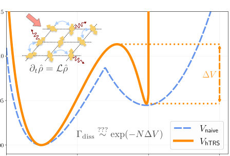
<figcaption class="paper-figure-caption"><b>Fig 1.</b> FIG. 1. Hidden time-reversal symmetry allows one to di- rectly predict the dissipative gap Γdiss (i.e. slowest relaxation rate) of open many-body Lindbladians (see inset). A special steady-state purification defines a potential function VhTRS(o) (solid, orange) whose barrier height ∆V controls the dissipa- tive gap; here o is an effective order parameter. This potential does not match a more naively-defined potential Vnaive(o) ob- tained directly from the steady-state density matrix (dashed, blue). Results are for a dissipative transverse-field Ising model (with o related to the magnetization), tuned near a first-order phase transition; see Appendix C 3 and Fig. 12).</figcaption>
</figure>
<figure class="paper-figure-card">
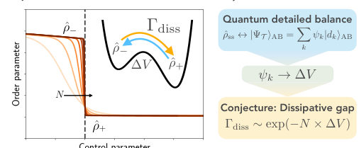
<figcaption class="paper-figure-caption"><b>Fig 2.</b> FIG. 2. a) Generic plot of the steady-state average order parameter versus the relevant system parameter for a system exhibiting a first-order dissipative phase transition (DPT), for various system sizes N. At the DPT (dashed line) the steady state ˆρss abruptly changes from ˆρ−to ˆρ+. Slow dynamics are governed by the dissipative gap Γdiss, which close to the transition is akin to the slow switching rate between minima of a double-well potential. c) For systems having hTRS, despite not being in thermal equilibrium, we conjecture (and show for several examples) that ˆρss directly determines Γdiss. A special purification of ˆρss sets an effective potential barrier ∆V , which then sets Γdiss...</figcaption>
</figure>
<figure class="paper-figure-card">
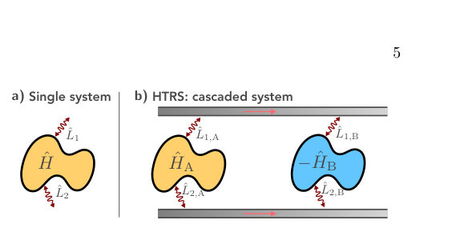
<figcaption class="paper-figure-caption"><b>Fig 3.</b> FIG. 3. Construction of the doubled system in the hid- den time-reversal symmetry framework. a) A quantum sys- tem with Hamiltonian ˆH is subject to Markovian dissipation shown here using two jump operators ˆL1 and ˆL2. b) This quantum system forms system A of the doubled system con- sidered in hTRS. System A and system B emit photons into chiral waveguides which only propagate photons from system A to system B, resulting in a cascaded quantum network [53]. Therefore system A is not impacted by system B while system B interacts with the radiation dissipated by system A. If the model has hidden time-reversal symmetry, the Hamiltonian and jump operators of system B are simply related to those...</figcaption>
</figure>
<figure class="paper-figure-card">
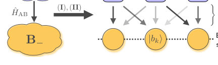
<figcaption class="paper-figure-caption"><b>Fig 4.</b> FIG. 4. Pictorial illustration of the main arguments presented in Sec. IV A. a) The steady-state purification lives in a dark- state manifold D+ (top) which is mapped to an orthogonal manifold B−(bottom) under ˆHAB. However, these manifolds are unstructured which complicates solving Eq. (17). We ar- gue that this problem massively simplifies assuming Eqs. (21) and (26). b) Under these assumptions we can use a charge degree of freedom to arrange a special set of states in D+ (top) and B−(bottom) as two legs of a ladder which are cou- pled in a local fashion by ˆHAB (solid arrows). This simplified structure allows us to obtain analytical expressions for the purified steady state |ΨT ⟩AB using...</figcaption>
</figure>
<figure class="paper-figure-card">
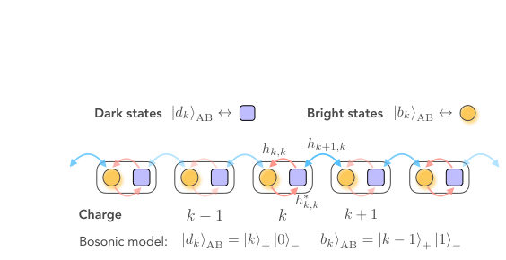
<figcaption class="paper-figure-caption"><b>Fig 5.</b> FIG. 5. Mapping the Hermitian ladder model to a tight- binding chain with inhomogeneous hopping amplitudes for the nonlinear cavity model in Sec. V A. Using the coupling coefficients hk,k and hk+1,k defined in Eq. (44) the effective Hamiltonian ˆH′ AB has the structure of a tight-binding chain with a two-site unit cell, corresponding to the dark states |dk⟩AB and bright states |bk⟩AB with charge k.</figcaption>
</figure>
</div>

<p><strong>Summary.</strong> This paper introduces an analytical method to determine slow relaxation rates (metastability) in open quantum many-body systems exhibiting hidden time-reversal symmetry. By purifying the non-equilibrium steady state, the authors derive an effective potential barrier whose height predicts the dissipative gap scaling ($\exp(-N\Delta V)$). This approach offers a powerful alternative to complex instanton calculations for understanding first-order phase transitions in driven quantum matter.</p>
<p><strong>Why it may be interesting.</strong> This work provides a powerful, symmetry-based theoretical tool for calculating non-equilibrium dynamics in complex quantum systems where traditional methods fail. The ability to bypass path integrals by analyzing the NESS structure is highly valuable for AMO physicists studying driven cavity QED or superconducting circuits.</p>
<details>
<summary>Detailed structure</summary>
<p><strong>Main problem.</strong> The research addresses understanding metastability and exponentially-long timescales in open, driven-dissipative quantum many-body systems near first-order dissipative phase transitions (DPTs). The goal is to analytically predict the slow relaxation rate without relying on intractable path-integral methods.</p>
<p><strong>Main result.</strong> The authors propose that for systems possessing hidden time-reversal symmetry (hTRS), the slow dynamics are governed by an effective potential barrier ($\Delta V$) derived directly from a special purification of the non-equilibrium steady state (NESS). This method successfully reproduces results from established instanton calculations.</p>
<p><strong>Method.</strong> The core methodology involves exploiting the existence of hTRS to construct a doubled system formalism. This allows for the analytical determination of the NESS purification, which in turn yields an effective potential $V(n)$ whose barrier height predicts the dissipative gap $\Gamma_{	ext{diss}} \sim e^{-N\Delta V}$.</p>
<p><strong>Model / system.</strong> The work analyzes general driven-dissipative open quantum systems described by Lindblad master equations. Specific models studied include boundary-driven spin chains, bosonic lattice models, and the Dissipative Transverse-field Ising Model (DTFIM). The analysis often employs a doubled-system formalism to enforce hTRS.</p>
<p><strong>Key observables.</strong> Dissipative gap ($\Gamma_{	ext{diss}}$), Non-equilibrium potential barrier ($\Delta V$), Steady-state order parameter $\langle \hat{
ho}_{	ext{ss}} 
angle$, and the purified steady state $|\Psi_T 
angle_{AB}$.</p>
<p><strong>Important parameters / regimes.</strong> System size ($N$), control parameters (e.g., detuning, coupling strengths), and the scaling exponent $N$ in the exponential decay rate.</p>
<p><strong>Assumptions / limitations.</strong> The primary assumption is the existence of hidden time-reversal symmetry (hTRS) in the system dynamics. The analysis often relies on mean-field approximations or specific symmetries (like permutational symmetry for probability distributions).</p>
<p><strong>Figures summary.</strong> Figures illustrate how the derived potential $V_{	ext{hTRS}}(o)$ determines the gap, comparing it to naive potentials; they also show the ladder structure resulting from the doubled system mapping and compare calculated barriers against established instanton results.</p>
<p><strong>Paper structure.</strong> The paper builds conceptually by first establishing the classical analogy for detailed balance, then generalizing this concept to quantum systems via hTRS using a doubled-system formalism. It applies this framework to specific models (like nonlinear cavities or DTFIM) to derive and compare the predicted potential barriers with known results.</p>
</details>
<details>
<summary>Abstract</summary>
<p>Metastability in many-body quantum systems and its associated exponentially-long timescales have been the subject of considerable recent interest. Here, we focus on a class of driven-dissipative many-body open quantum systems described by a Lindbladian having hidden time-reversal symmetry (a form of quantum detailed balance). Examples include boundary-driven interacting spin chains, bosonic lattice models and driven-dissipative collective spin models. We suggest that for such systems, slow timescales in the vicinity of a dissipative first-order phase transition can be analytically predicted using a special purification of the non-equilibrium steady state. We show the accuracy of our conjecture through detailed studies of a dissipative transverse-field Ising model with collective and local decay, and a driven-dissipative nonlinear cavity model. Our results allow quantitative insights into metastability and slow dynamics for a range of systems, including cases where semiclassical or path-integral instanton approaches are intractable.</p>
</details>
<p><sub><a href="#top">↑ back to top</a></sub></p>

<p><a id="paper-2606.09297"></a></p>
<h3 id="control-transition-in-a-temporally-random-classical-spin-chain">⭐ <a href="http://arxiv.org/abs/2606.09297v1">Control transition in a temporally random classical spin chain</a></h3>
<p><strong>Highlighted author(s):</strong> Sarang Gopalakrishnan<br>
<strong>Authors:</strong> Elisha Shmalo, J. H. Pixley, Manas Kulkarni, Sarang Gopalakrishnan, David A. Huse<br>
<strong>Type:</strong> theory · <strong>Category:</strong> statistical mechanics · <strong>PDF:</strong> <a href="https://arxiv.org/pdf/2606.09297v1">https://arxiv.org/pdf/2606.09297v1</a><br>
<strong>Analysis basis:</strong> full PDF text, analyzed in chunks
<strong>Topic relevance:</strong> 🔥 <code>non-equilibrium universality</code> <strong>4/5</strong> · <code>driven-dissipative phase transition</code> <strong>3/5</strong> · <code>non-equilibrium dynamics</code> <strong>2/5</strong> · <code>Frenkel-Kontorova</code> <strong>1/5</strong> · <code>correlated / nonlocal dissipation</code> <strong>1/5</strong> · <code>exotic spin models in light-matter</code> <strong>1/5</strong> · <code>methods for driven-dissipative</code> <strong>1/5</strong></p>
<div class="figure-strip-hint">↔ Scroll figures horizontally</div>
<div class="paper-figures-scroll">
<figure class="paper-figure-card">
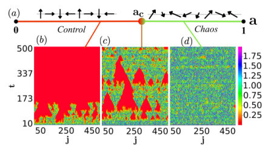
<figcaption class="paper-figure-caption"><b>Fig 1.</b> Figure 1. Top Row: (a) Schematic of the phase diagram between controlled and chaotic phases tuned by the con- trol parameter a, separated by the critical point ac. The wavelength-4 spin spiral in Eq. (3) is depicted, as well as a chaotic configuration. Bottom Row: activity dy- namics after starting in a random initial state, revealed through space-time (j-t) plots of δSj(t) defined in Eq. (5) (values given in color bar). In the controlled phase (b), a = 0.72, the system goes to the controlled state (red) at long times, note how the temporal randomness causes many active regions to “die” simultaneously; in the crit- ical regime (c), a = 0.758 ≈ac, we have “active” and “dead” regions and the...</figcaption>
</figure>
<figure class="paper-figure-card">
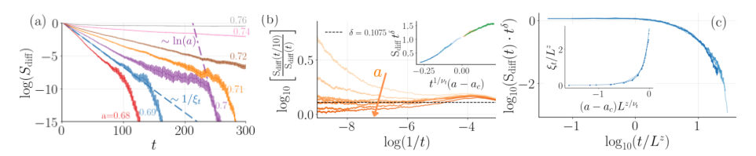
<figcaption class="paper-figure-caption"><b>Fig 2.</b> Figure 2. Activity across the transition: (a) The activity Sdiff(t) in Eq. (5) on a log-scale versus time (t) for chain length L = 256 and a = 0.68 to a = 0.76 across the controlled and chaotic phases. In the controlled phase two temporal regimes are separated by t∗[see Eq. (6)], displaying the critical decay regime set by ξt (example in blue dashed line) and the later-time decay that occurs once all realizations are close enough to the control state (purple dotted-dashed line). (b) logb[Sdiff(t/b)/Sdiff(t)] with b = 10, plotted as a function of time. The a values range from a = 0.7535 (highest curve) to a = 0.7615 (lowest curve). Finding the value of a for which this ratio is constant in...</figcaption>
</figure>
<figure class="paper-figure-card">
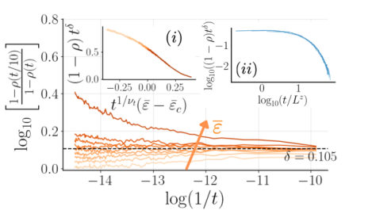
<figcaption class="paper-figure-caption"><b>Fig 3.</b> Figure 4. Determination of critical exponents for Stavskaya’s model with temporal randomness: (a) Using L = 20000 for 0.25315 ≤ε ≤0.25435 to de- termine ¯εc = 0.253725(5) and δ = 0.105(5); see end matter for definition of the activity in this model (ρ). Left inset (i): Scaling collapse near ¯εc = 0.253725 to determine νt = 2.25(5), and therefore β = 0.236(5). Right inset (ii): Finite-size scaling at ¯εc = 0.253725 with L = 4000, 8000, 16000 to determine z = 1.45(5).</figcaption>
</figure>
<figure class="paper-figure-card">
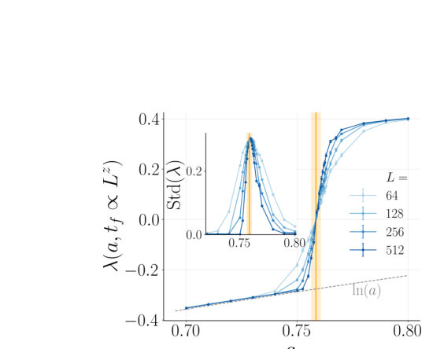
<figcaption class="paper-figure-caption"><b>Fig 4.</b> Figure 3. Jump in the leading Lyapunov expo- nent and its fluctuations: The average Lyapunov ex- ponent λ in Eq. (S1) over 1000 samples evaluated at a late time tf ∼L1.34 by averaging over the time window [tf, 3tf]. As the critical point is approached from the chaotic phase (a &gt; ac), λ approaches a positive value λ ≈0.35, while in the control phase (a &lt; ac) the λ is close to ln(a) (gray dashed line), but averaging over the random signs in Jx,y(t) from Eq. (1) makes this value slightly larger. At the transition ac our data is consis- tent with a discontinuous jump in the Lyapunov expo- nent of an infinite system from its chaotic value to its control value, thus first-order-like behavior....</figcaption>
</figure>
</div>

<p><strong>Summary.</strong> This work theoretically examines the transition between chaotic and controlled behavior in a classical spin chain model driven by alternating Hamiltonian and control dynamics. The key finding is that this transition displays contrasting characteristics, notably a jump discontinuity in the Lyapunov exponent despite continuous decay of activity. The critical behavior suggests the system belongs to a universality class related to directed percolation under temporal randomness.</p>
<p><strong>Why it may be interesting.</strong> It provides a concrete example of how non-equilibrium dynamics can exhibit phase transitions characterized by mixed signatures (continuous vs. discontinuous observables), linking classical spin systems to established concepts in statistical mechanics like DP criticality.</p>
<details>
<summary>Detailed structure</summary>
<p><strong>Main problem.</strong> The study investigates a phase transition between controlled and chaotic dynamics in a classical spin chain model subjected to alternating Hamiltonian evolution and a contractive control map.</p>
<p><strong>Main result.</strong> The transition exhibits mixed character, marked by the continuous vanishing of activity but a discontinuous jump in the leading Lyapunov exponent from positive (chaotic) to negative (controlled).</p>
<p><strong>Method.</strong> Theoretical analysis involving numerical simulation of spin dynamics, critical scaling hypothesis testing, and comparison of resulting exponents with known universality classes like directed percolation.</p>
<p><strong>Model / system.</strong> A classical spin chain model using O(3) vectors whose time evolution alternates between a Heisenberg Hamiltonian (with random couplings) and a contractive control map towards an unstable fixed point. The critical behavior is compared to Stavskaya's automaton for 1+1D directed percolation.</p>
<p><strong>Key observables.</strong> Activity ($\delta S_{diff}$), leading Lyapunov exponent ($\lambda$), and critical exponents ($eta, 
u_t, z$).</p>
<p><strong>Important parameters / regimes.</strong> Control strength parameter ($a$) which tunes the system between chaotic and controlled phases; the critical point $a_c$.</p>
<p><strong>Assumptions / limitations.</strong> The dynamics are treated as temporally random to avoid persistent non-chaotic features like solitons; scaling laws derived from critical phenomena theory are applied.</p>
<p><strong>Figures summary.</strong> Figures illustrate space-time plots of activity across different control strengths, showing the transition regime. Other figures detail the jump in the Lyapunov exponent and finite-size scaling analysis for determining critical exponents.</p>
<p><strong>Paper structure.</strong> The paper establishes the model dynamics (Hamiltonian + Control Map), analyzes the behavior in both phases using observables like activity and $\lambda$, determines the critical point $a_c$ via scaling, and finally compares the resulting critical exponents to those of directed percolation universality classes.</p>
</details>
<details>
<summary>Abstract</summary>
<p>We theoretically explore a phase transition between controlled and chaotic dynamics in a classical spin chain model subject to chaotic Hamiltonian dynamics and a contractive "control map", which alternate in time. The control map drives the system toward a target configuration that is an unstable fixed point under the chaotic dynamics. When the control is strong enough, the target configuration is the globally attracting stable fixed point of the dynamics; for weaker control, the many-body dynamics remains chaotic for almost all initial states. The phase transition between controlled and chaotic phases has a mixed character: As the transition is approached from the chaotic phase, the fraction of the spins that are far from the target configuration goes continuously to zero, and there are diverging spatial and temporal correlation lengths; however, the leading Lyapunov exponent is discontinuous across the transition, jumping from a positive value in the chaotic phase to a negative value in the controlled phase. We present evidence that this transition is in the same universality class as directed percolation in the presence of temporal randomness, a universality class for which we obtain results that are consistent with the dynamical Harris criterion but do not saturate the bound.</p>
</details>
<p><sub><a href="#top">↑ back to top</a></sub></p>

<p><a id="paper-2606.09823"></a></p>
<h3 id="topological-triplons-in-the-pinwheel-valence-bond-solid-on-the-kagome-lattice">⭐ <a href="http://arxiv.org/abs/2606.09823v1">Topological Triplons in the Pinwheel Valence Bond Solid on the Kagome Lattice</a></h3>
<p><strong>Highlighted author(s):</strong> Johannes Knolle<br>
<strong>Authors:</strong> Laura Calonge-Martínez, Peng Rao, Frédéric Mila, Johannes Knolle<br>
<strong>Type:</strong> theory · <strong>Category:</strong> strongly correlated electrons · <strong>PDF:</strong> <a href="https://arxiv.org/pdf/2606.09823v1">https://arxiv.org/pdf/2606.09823v1</a><br>
<strong>Analysis basis:</strong> full PDF text, analyzed in chunks
<strong>Topic relevance:</strong> 🔥 <code>analog quantum simulation</code> <strong>4/5</strong> · <code>exotic spin models in light-matter</code> <strong>3/5</strong> · <code>non-equilibrium dynamics</code> <strong>2/5</strong> · <code>Keldysh / 2PI / non-Gaussian methods</code> <strong>1/5</strong> · <code>entanglement &amp; information structure</code> <strong>1/5</strong> · <code>methods for driven-dissipative</code> <strong>1/5</strong> · <code>spintronics-quantum-optics interface</code> <strong>1/5</strong></p>
<div class="figure-strip-hint">↔ Scroll figures horizontally</div>
<div class="paper-figures-scroll">
<figure class="paper-figure-card">
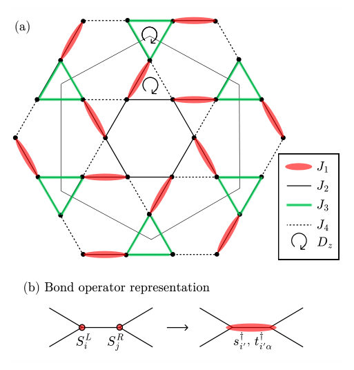
<figcaption class="paper-figure-caption"><b>Fig 1.</b> FIG. 1. (a) Deformed kagome lattice structure of Rb2Cu3SnF12. The four inequivalent nearest-neighbor exchange couplings J1–J4 are indicated by distinct bond types, forming a 12-site pinwheel VBS unit cell. Red bonds denote singlet dimers, while arrows indicate the orientation of the out-of-plane DMI Dz ij. (b) Schematic summary of the bond operator description.</figcaption>
</figure>
<figure class="paper-figure-card">
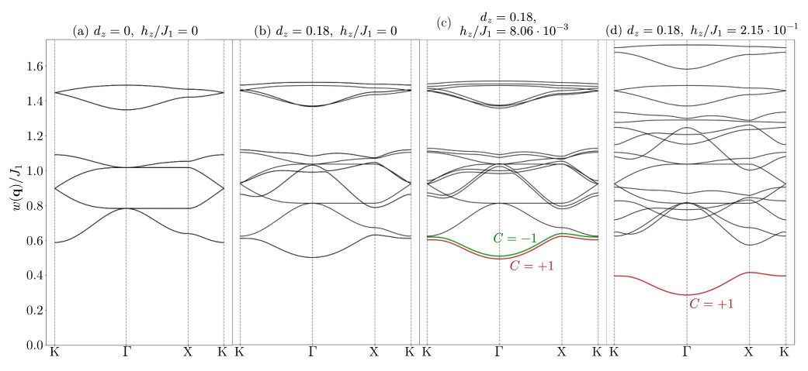
<figcaption class="paper-figure-caption"><b>Fig 2.</b> FIG. 2. Triplon energy bands for the nearest-neighbor pinwheel valence-bond solid on the kagome lattice. (a) Spectrum in the absence of DMI and magnetic field, showing threefold degenerate triplet modes. (b) Inclusion of DMI with dz = 0.18. (c) Addition of a small magnetic field further splits the transverse (x and y) triplon branches. (d) Larger magnetic field leading to a clear isolation of the lowest-energy band.</figcaption>
</figure>
<figure class="paper-figure-card">
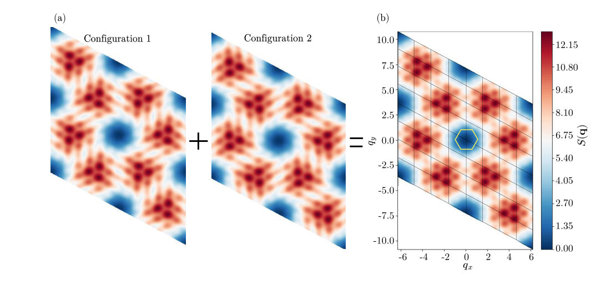
<figcaption class="paper-figure-caption"><b>Fig 3.</b> FIG. 3. Static structure factor S (q) = S xx(q) + S yy(q) + S zz(q) for dz = 0.18 and zero magnetic field, obtained by assembling 64 reduced Brillouin zones. (a) The two panels correspond to the two chiral configurations. (b) S (q) averaged over both configurations. The background grid indicates the tiling of the the 64 shifted reduced Brillouin zones used in the construction, while the hexagon highlighted in yellow marks the first Brillouin zone</figcaption>
</figure>
<figure class="paper-figure-card">
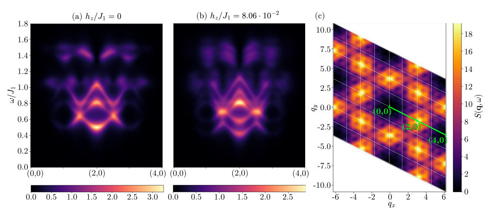
<figcaption class="paper-figure-caption"><b>Fig 4.</b> FIG. 4. Dynamical structure factor S (q, ω) = S xx(q, ω) + S yy(q, ω) + S zz(q, ω) at zero temperature. (a) Intensity along a one-dimensional momentum path (indicated in green in panel (c)) for dz = 0.18 and zero magnetic field. (b) Same as in (a) in the presence of an external magnetic field of intensity h = 1.5 meV applied along the z direction, showing the Zeeman splitting of the triplon branches. (c) dynamical structure factor intensity integrated over the low-energy window 0.4 ≤ω ≤1.0 with no magnetic field, plotted in an extended Brillouin zone scheme obtained by assembling 64 zones. The results are averaged over the two pinwheel domains.</figcaption>
</figure>
<figure class="paper-figure-card">
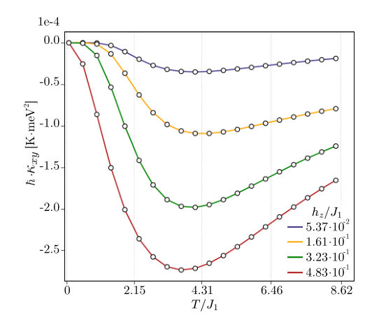
<figcaption class="paper-figure-caption"><b>Fig 5.</b> FIG. 5. Transverse thermal Hall conductivity κxy as a function of temperature for several values of applied magnetic field in the z- direction.</figcaption>
</figure>
</div>

<p><strong>Summary.</strong> The research analyzes the exotic triplon excitations within a pinwheel Valence Bond Solid on a kagome lattice. By incorporating Dzyaloshinskii-Moriya interactions and an external magnetic field, the authors predict that the system can host non-trivial band topology characterized by Chern numbers. This topological feature is directly linked to a measurable, tunable thermal Hall effect.</p>
<p><strong>Why it may be interesting.</strong> This work applies advanced many-body theoretical tools (bond operators, BdG formalism) to predict measurable transport phenomena ($\kappa_{xy}$) arising from emergent topological order in frustrated quantum magnets.</p>
<details>
<summary>Detailed structure</summary>
<p><strong>Main problem.</strong> The study investigates topological triplon excitations and their associated thermal Hall response in a specific quantum magnet system.</p>
<p><strong>Main result.</strong> The deformed kagome pinwheel VBS is shown to be a promising platform for observing topological triplon physics, leading to a tunable thermal Hall conductivity when DMI and an external magnetic field are present.</p>
<p><strong>Method.</strong> Calculations employ bond-operator mean-field theory combined with the Bogoliubov–de Gennes formalism to determine band structures and topological invariants like Chern numbers.</p>
<p><strong>Model / system.</strong> The system is the compound Rb2Cu3SnF12, which realizes a pinwheel Valence Bond Solid (VBS) on a deformed kagome lattice. The Hamiltonian includes Heisenberg exchange, Dzyaloshinskii-Moriya interactions, and an external magnetic field.</p>
<p><strong>Key observables.</strong> Triplon band structure, dynamical structure factor S(q, w), Berry curvatures, Chern numbers, and thermal Hall conductivity (kappa_xy).</p>
<p><strong>Important parameters / regimes.</strong> DMI parameter d_z = 0.18; exchange couplings J1=18.6 meV, J2=0.95J1, J3=0.85J1, J4=0.55J1.</p>
<p><strong>Assumptions / limitations.</strong> The analysis relies on mean-field approximations and neglects higher-order interaction terms (e.g., triplon–triplon interactions) in the structure factor calculations.</p>
<p><strong>Figures summary.</strong> Figures illustrate the lattice structure, schematic bond operator description, band splittings under DMI/B field, agreement of S(q, w) with neutron scattering data, and dependence of kappa_xy on T and B.</p>
<p><strong>Paper structure.</strong> The paper progresses from establishing the VBS ground state using bond operators to calculating spectral properties (S(q,w)) by comparing theory to experiment. It then focuses on topological analysis via Berry curvature and culminates in deriving a finite thermal Hall conductivity formula based on Chern numbers.</p>
</details>
<details>
<summary>Abstract</summary>
<p>We investigate the triplon excitations of the pinwheel valence-bond-solid phase on the deformed kagome lattice compound Rb2Cu3SnF12. Using bond-operator mean-field theory, we compute the triplon band structure, dynamical structure factor, Berry curvatures and the associated thermal Hall response. We show that the presence of Dzyaloshinskii-Moriya interactions and an external magnetic field are key for endowing triplon bands with nontrivial Chern numbers. We find good qualitative agreement of the low-energy dynamical structure factor with neutron-scattering experiments. An applied magnetic field can isolate the lowest triplon Chern band leading to a tunable thermal Hall conductivity for accessible temperature and field regimes. Our results establish the deformed kagome pinwheel valence-bond solid as a promising platform for topological triplon physics and for observing the associated thermal Hall effect.</p>
</details>
<p><sub><a href="#top">↑ back to top</a></sub></p>

<p><a id="paper-2606.08536"></a></p>
<h3 id="cascaded-rydberg-antiblockade-multi-atom-excitation-dynamics-and-entanglement"><a href="http://arxiv.org/abs/2606.08536v1">Cascaded Rydberg antiblockade: Multi-atom excitation dynamics and entanglement</a></h3>
<p><strong>Authors:</strong> Jin-Lei Wu, Jun Wu, Pei-Yao Song, Yan Wang, Ya Gao, Xue-Ke Song, Shi-Lei Su<br>
<strong>Type:</strong> theory · <strong>Category:</strong> other · <strong>PDF:</strong> <a href="https://arxiv.org/pdf/2606.08536v1">https://arxiv.org/pdf/2606.08536v1</a><br>
<strong>Analysis basis:</strong> full PDF text, analyzed in chunks
<strong>Topic relevance:</strong> 🔥 <code>Rydberg arrays</code> <strong>5/5</strong> · 🔥 <code>analog quantum simulation</code> <strong>4/5</strong> · <code>entanglement &amp; information structure</code> <strong>3/5</strong> · <code>methods for driven-dissipative</code> <strong>3/5</strong> · <code>non-equilibrium dynamics</code> <strong>3/5</strong> · <code>correlated / nonlocal dissipation</code> <strong>2/5</strong> · <code>non-equilibrium universality</code> <strong>2/5</strong> · <code>Keldysh / 2PI / non-Gaussian methods</code> <strong>1/5</strong> · <code>Tavis-Cummings &amp; cavity-many-emitter</code> <strong>1/5</strong> · <code>driven-dissipative phase transition</code> <strong>1/5</strong> · <code>exotic spin models in light-matter</code> <strong>1/5</strong></p>
<div class="figure-strip-hint">↔ Scroll figures horizontally</div>
<div class="paper-figures-scroll">
<figure class="paper-figure-card">
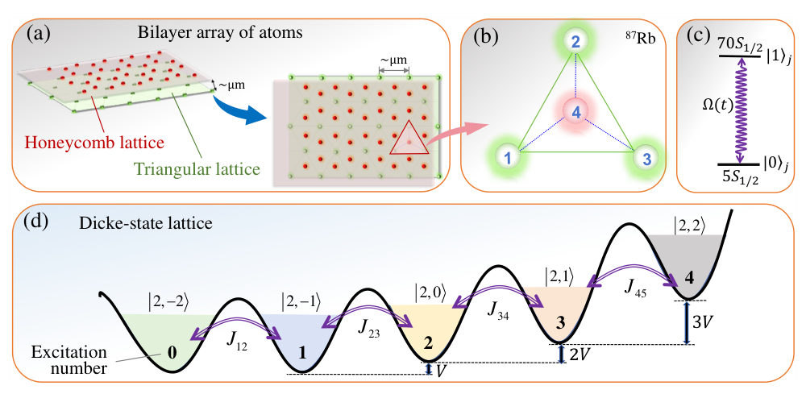
<figcaption class="paper-figure-caption"><b>Fig 1.</b> FIG. 1. (a) Schematic diagram of a bilayer neutral atom array, with one layer holding single atoms assembled at sites in a triangular optical lattice while the other in a honeycomb lattice. (b) Four fully connected atoms with an equidistant interaction strength V between arbitrary two. (c) Atomic spin transition being identically driven by a periodic amplitude-modulated field, from the ground state |0⟩to the Rydberg state |1⟩with a Floquet Rabi frequency Ω(t). (d) One-dimensional synthetic dimension in DSL with the individually addressable nearest-neighbor hopping rates.</figcaption>
</figure>
<figure class="paper-figure-card">
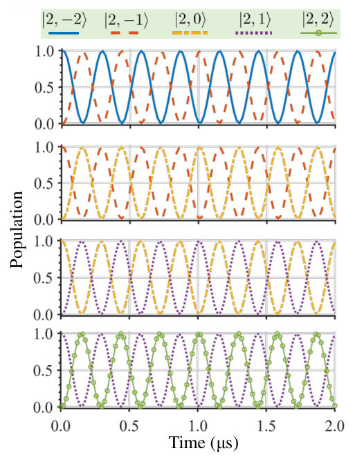
<figcaption class="paper-figure-caption"><b>Fig 2.</b> FIG. 2. Complete Rabi-like oscillations between two adjacent DSL sites |2, n−2⟩and |2, n−1⟩with the initial state |2, n−2⟩, with n increasing from the uppermost panel n = 0 to the lowest n = 3, respectively.</figcaption>
</figure>
<figure class="paper-figure-card">
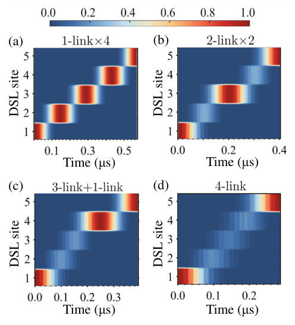
<figcaption class="paper-figure-caption"><b>Fig 3.</b> FIG. 3. Full RAB processes through population transfers from |2, −2⟩to |2, 2⟩in different ways based on the PST method. (a) Four steps via four times of 1-link hops. (b) Two steps via two times of 2-link hops. (c) Two steps via one 3- link hop plus one 1-link hop. (d) One step via one 4-link hop. Detailed parameters and descriptions are found in the main text.</figcaption>
</figure>
<figure class="paper-figure-card">
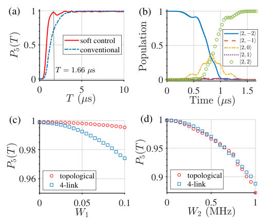
<figcaption class="paper-figure-caption"><b>Fig 4.</b> FIG. 4. (a) Population of |1111⟩at the instant t = T versus the duration T, based on the conventional scheme and the soft control scheme with the Gaussian envelopes in eq. (11). (b) Time-dependent populations of the five Dicke states during the transition from the ground state to the full RAB state. Effect of disorder intensity on the final population of |1111⟩ for (c) off-diagonal terms and (d) diagonal terms, with com- parison between the soft control scheme and the 4-link PST scheme. Each datum in (c) and (d) is obtained by averaging 501 results with the off-diagonal or diagonal disorder terms being randomly picked.</figcaption>
</figure>
<figure class="paper-figure-card">
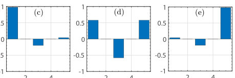
<figcaption class="paper-figure-caption"><b>Fig 5.</b> FIG. 5. Instantaneous energy spectrum of the five-site DSL under (a) the conventional modulation and (b) the Gaussian soft-control scheme. (c)–(e) Spatial distributions of the gap state on the five sites at t = T/4, T/2, and 3T/4 for the Gaussian scheme.</figcaption>
</figure>
</div>

<p><strong>Summary.</strong> The authors propose using Floquet modulation on four interacting Rydberg atoms to create a controllable Dicke-state lattice. They demonstrate advanced quantum control techniques, including soft quantum control and STA, to achieve perfect state transfer and generate high-fidelity twin-Fock and GHZ entangled states rapidly. This establishes the platform as a versatile tool for quantum simulation and entanglement engineering.</p>
<p><strong>Why it may be interesting.</strong> This work provides a highly programmable synthetic dimension (DSL) for quantum simulation, offering robust methods to engineer complex multi-particle entangled states faster than standard adiabatic protocols in Rydberg arrays.</p>
<details>
<summary>Detailed structure</summary>
<p><strong>Main problem.</strong> The research aims to achieve coherent, programmable control over collective spin excitation dynamics in interacting Rydberg atom arrays using a cascaded Rydberg antiblockade (RAB) regime.</p>
<p><strong>Main result.</strong> They successfully demonstrate perfect state transfer across a synthetic Dicke-state lattice and generate high-fidelity entangled states (twin-Fock and GHZ) on sub-microsecond timescales, outperforming conventional adiabatic methods.</p>
<p><strong>Method.</strong> The study employs Floquet modulation to derive an effective Hamiltonian for the system, utilizing techniques like soft quantum control and Stimulated Raman Adiabatic Passage (STA).</p>
<p><strong>Model / system.</strong> The platform uses four fully connected interacting Rydberg atoms in $^{87}	ext{Rb}$ trapped in a lattice. The dynamics are modeled using a master equation incorporating spontaneous decay, leading to an effective Hamiltonian describing the Dicke-state lattice.</p>
<p><strong>Key observables.</strong> Population transfer fidelity ($|0000
angle 	o |1111
angle$), Concurrence ($  ext{CN}$) for twin-Fock and GHZ states, and population dynamics across the DSL sites.</p>
<p><strong>Important parameters / regimes.</strong> Rydberg blockade strength ($V$), driving field modulation parameters ($\Omega_n(t)$), and timescales (sub-microsecond).</p>
<p><strong>Assumptions / limitations.</strong> The analysis relies on applying the Rotating-Wave Approximation (RWA) and specific conditions for adiabatic elimination to derive the effective Hamiltonian.</p>
<p><strong>Figures summary.</strong> Figures illustrate population transfers across the DSL, compare soft control vs. conventional methods for state transfer fidelity, and show the evolution of entanglement concurrence for generated states.</p>
<p><strong>Paper structure.</strong> The paper progresses from defining the initial system Hamiltonian under global periodic driving to deriving an effective Dicke-state lattice Hamiltonian. It then details applications: first, demonstrating perfect state transfer using soft control; second, simulating topological dynamics; and finally, generating high-fidelity entanglement via STA.</p>
</details>
<details>
<summary>Abstract</summary>
<p>We propose a cascaded Rydberg antiblockade (RAB) regime via a Floquet modulation in four fully connected interacting atoms, which establishes a new synthetic dimension, Dicke-state lattice (DSL), in the space of collective spin excitations. By applying a global periodic driving, we synthesize an effective Hamiltonian that enables perfect state transfer across the five-site DSL with multiple programmable pathways from stepwise nearest-neighbor jumps to a single-step transition. This DSL platform further allows us to simulate a dynamic Su-Schrieffer-Heeger model, where soft quantum control is employed to achieve topologically inspired full RAB $|0000\rangle \to |1111\rangle$ with enhanced robustness against disorder. Moreover, by incorporating the shortcut to adiabaticity technique, we generate high-fidelity entangled twin-Fock and Greenberger-Horne-Zeilinger states on the four atoms within sub-microsecond timescales, outperforming the speed limits of conventional adiabatic protocols. Our work demonstrates a flexible and programmable synthetic dimension for quantum simulation and multipartite entanglement engineering in Rydberg atom arrays, paving the way for the future development of quantum information processing.</p>
</details>
<p><sub><a href="#top">↑ back to top</a></sub></p>

<p><a id="paper-2606.09306"></a></p>
<h3 id="range-controlled-entanglement-in-lindbladian-skin-states-of-monitored-fermions"><a href="http://arxiv.org/abs/2606.09306v1">Range-controlled entanglement in Lindbladian skin states of monitored fermions</a></h3>
<p><strong>Authors:</strong> Gianluca Passarelli, Angelo Russomanno, Davide Rossini, Procolo Lucignano<br>
<strong>Type:</strong> theory · <strong>Category:</strong> statistical mechanics · <strong>PDF:</strong> <a href="https://arxiv.org/pdf/2606.09306v1">https://arxiv.org/pdf/2606.09306v1</a><br>
<strong>Analysis basis:</strong> full PDF text, analyzed in chunks
<strong>Topic relevance:</strong> 🔥 <code>entanglement &amp; information structure</code> <strong>4/5</strong> · 🔥 <code>measurement-induced transitions</code> <strong>4/5</strong> · 🔥 <code>methods for driven-dissipative</code> <strong>4/5</strong> · <code>analog quantum simulation</code> <strong>3/5</strong> · <code>correlated / nonlocal dissipation</code> <strong>3/5</strong> · <code>driven-dissipative phase transition</code> <strong>3/5</strong> · <code>non-equilibrium universality</code> <strong>3/5</strong> · <code>quantum measurements</code> <strong>3/5</strong> · <code>Keldysh / 2PI / non-Gaussian methods</code> <strong>2/5</strong> · <code>Kondo &amp; dissipative impurity</code> <strong>2/5</strong> · <code>non-equilibrium dynamics</code> <strong>2/5</strong> · <code>scars &amp; prethermalization</code> <strong>1/5</strong></p>
<div class="figure-strip-hint">↔ Scroll figures horizontally</div>
<div class="paper-figures-scroll">
<figure class="paper-figure-card">
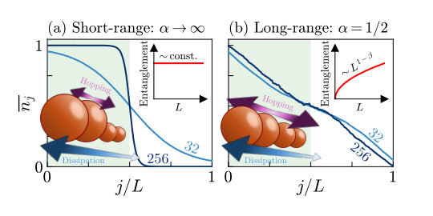
<figcaption class="paper-figure-caption"><b>Fig 1.</b> FIG. 1. Representative steady-state fermion density profiles at half filling for γ = 1/2 and λ = 2. The shaded region marks the left half of the chain, where directed dissipation accumulates particles. (a) Short-range hopping sharpens the Fermi-skin profile with increasing L (see curve labels), consis- tent with complete skin accumulation; the inset sketches the corresponding area-law behavior of the trajectory entangle- ment entropy. (b) Long-range hopping leaves a finite density tail in the right half of the chain over the accessible sizes, in- dicating incomplete skin accumulation; the inset sketches the corresponding sub-volume-law finite-size growth of entangle- ment.</figcaption>
</figure>
<figure class="paper-figure-card">
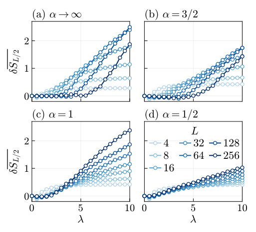
<figcaption class="paper-figure-caption"><b>Fig 2.</b> FIG. 3. Finite-size difference δSL/2 for (a) the nearest- neighbor model (α →∞), (b) α = 3/2, (c) α = 1, and (d) α = 1/2. The onset of entanglement growth drifts toward larger λ with increasing L for α →∞and, over the accessible sizes, also for α = 3/2, while it remains approximately size- independent for α = 1 and α = 1/2.</figcaption>
</figure>
<figure class="paper-figure-card">
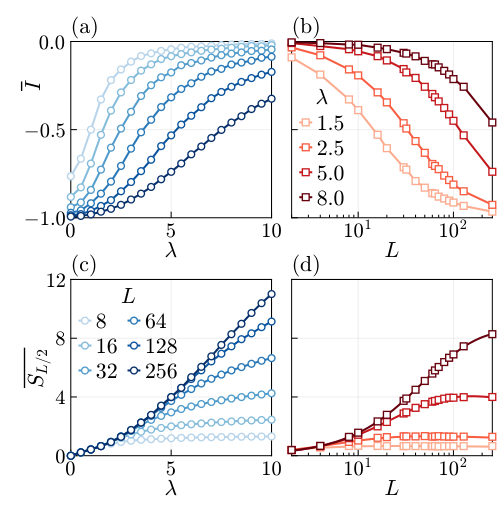
<figcaption class="paper-figure-caption"><b>Fig 3.</b> FIG. 2. Data for the nearest-neighbor Hamiltonian (γ = 1/2): (a) imbalance I and (c) half-chain entanglement entropy SL/2 as functions of the coherent coupling λ. (b) Imbalance and (d) half-chain entanglement entropy as functions of the system size L. In (d), solid lines show fits to Eq. (6). Within the reliable fitting window, they yield β ≥1, consistent with the absence of algebraic growth.</figcaption>
</figure>
<figure class="paper-figure-card">
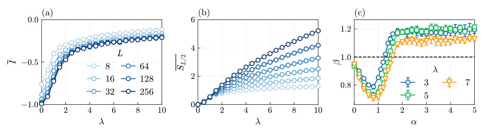
<figcaption class="paper-figure-caption"><b>Fig 4.</b> FIG. 4. (a,b) Data for the long-range Hamiltonian with α = 1/2 (γ = 1/2): (a) imbalance I and (b) half-chain entanglement entropy SL/2 as functions of the coherent coupling λ. (c) Fitting exponent β [Eq. (6)] as a function of the hopping range α for representative values of λ. The dashed line marks β = 1. The minimum near α ≃1 indicates maximal sub-volume-law growth, while the recovery of β ≥1 occurs within the interval 1 ≲α ≲2.</figcaption>
</figure>
</div>

<p><strong>Summary.</strong> The research explores the interplay between directed dissipation and coherent hopping in fermionic chains. By tuning the range of particle hopping ($\alpha$), the system can be driven into distinct steady states characterized by either a complete skin effect or an incomplete density tail. This physical control over localization is shown to directly dictate the scaling law of quantum entanglement, linking non-Hermitian physics to quantum information theory.</p>
<p><strong>Why it may be interesting.</strong> This work provides a concrete example of how non-Hermitian physics (the skin effect) couples directly to quantum information measures like entanglement entropy, offering tunable control over many-body correlations via microscopic parameters.</p>
<details>
<summary>Detailed structure</summary>
<p><strong>Main problem.</strong> The study investigates how tuning the hopping range ($\alpha$) controls both the localization of particle density (Lindbladian Skin Effect) and the scaling behavior of quantum entanglement in monitored fermionic systems.</p>
<p><strong>Main result.</strong> Short-range hopping leads to a complete skin effect accompanied by area-law entanglement, while long-range hopping results in an incomplete skin tail and algebraic sub-volume-law entanglement.</p>
<p><strong>Method.</strong> The dynamics are simulated using the master equation unraveled into quantum jump trajectories, analyzed within a Gaussian trajectory approximation for correlation matrices.</p>
<p><strong>Model / system.</strong> The system is modeled by spinless fermions on an open chain evolving under a Lindbladian dissipation ($\mathcal{L}$) and a coherent hopping Hamiltonian ($\hat{H}_\alpha$) with tunable range $\alpha$.</p>
<p><strong>Key observables.</strong> Particle density imbalance ($\langle\hat{I}
angle$), half-chain entanglement entropy ($S_L/2$), and the scaling exponent ($eta$) of $S(L)$.</p>
<p><strong>Important parameters / regimes.</strong> Hopping range parameter $\alpha$ (controlling hopping decay), dissipation asymmetry $\gamma$, and coherent coupling strength $\lambda$.</p>
<p><strong>Assumptions / limitations.</strong> The analysis relies on a Gaussian trajectory approximation to manage the complexity of higher-order correlation functions during quantum jump simulations.</p>
<p><strong>Figures summary.</strong> Figures illustrate steady-state density profiles showing sharp fronts (short-range) versus extended tails (long-range), and plot entanglement entropy scaling behavior for different hopping ranges and boundary conditions.</p>
<p><strong>Paper structure.</strong> The paper systematically compares the outcomes of short-range ($\alpha 	o \infty$) vs. long-range ($1 < \alpha < 2$) hopping regimes, demonstrating how $\alpha$ dictates whether a complete skin effect (area law) or an incomplete tail (sub-volume law) emerges.</p>
</details>
<details>
<summary>Abstract</summary>
<p>Reservoir engineering can stabilize states inaccessible to unitary dynamics. Directed particle-conserving dissipation creates Lindbladian skin states, where Pauli exclusion turns edge accumulation into a many-body density imbalance. In a monitored fermion chain with tunable hopping range, we identify, within a Gaussian trajectory approximation, two finite-size scaling regimes: short-range hopping is consistent with complete skin accumulation and area-law entanglement, whereas sufficiently long-range hopping produces a finite bulk tail and effective algebraic sub-volume-law entanglement. Dissipation and coherent hopping thus jointly control skin localization and quantum entanglement, highlighting their close interconnection.</p>
</details>
<p><sub><a href="#top">↑ back to top</a></sub></p>

<p><a id="paper-2606.09722"></a></p>
<h3 id="frequency-resolved-decoherence-spectroscopy-of-a-semiconductor-charge-qubit-coupled-to-a-high-impedance-resonator"><a href="http://arxiv.org/abs/2606.09722v1">Frequency-resolved decoherence spectroscopy of a semiconductor charge qubit coupled to a high-impedance resonator</a></h3>
<p><strong>Authors:</strong> Ekaterina Al-Tavil, Wonjin Jang, David J. van Woerkom, Ville Maisi, Stefano Bosco, Jan A. Krzywda, Jeroen Danon, Christian Reichl, Werner Wegscheider, Thomas Ihn, Klaus Ensslin, Andreas Wallraff, Pasquale Scarlino<br>
<strong>Type:</strong> experiment · <strong>Category:</strong> other · <strong>PDF:</strong> <a href="https://arxiv.org/pdf/2606.09722v1">https://arxiv.org/pdf/2606.09722v1</a><br>
<strong>Analysis basis:</strong> full PDF text, analyzed in chunks
<strong>Topic relevance:</strong> 🔥 <code>QC/QI experiment</code> <strong>4/5</strong> · <code>correlated cavity matter</code> <strong>3/5</strong> · <code>methods for driven-dissipative</code> <strong>3/5</strong> · <code>quantum optics experiment</code> <strong>3/5</strong> · <code>analog quantum simulation</code> <strong>2/5</strong> · <code>correlated / nonlocal dissipation</code> <strong>2/5</strong> · <code>driven-dissipative phase transition</code> <strong>2/5</strong> · <code>non-equilibrium dynamics</code> <strong>2/5</strong> · <code>quantum measurements</code> <strong>2/5</strong> · <code>Keldysh / 2PI / non-Gaussian methods</code> <strong>1/5</strong> · <code>Kondo &amp; dissipative impurity</code> <strong>1/5</strong> · <code>Tavis-Cummings &amp; cavity-many-emitter</code> <strong>1/5</strong> · <code>entanglement &amp; information structure</code> <strong>1/5</strong> · <code>exotic spin models in light-matter</code> <strong>1/5</strong> · <code>measurement-induced transitions</code> <strong>1/5</strong> · <code>non-equilibrium universality</code> <strong>1/5</strong> · <code>spintronics-quantum-optics interface</code> <strong>1/5</strong></p>
<div class="figure-strip-hint">↔ Scroll figures horizontally</div>
<div class="paper-figures-scroll">
<figure class="paper-figure-card">
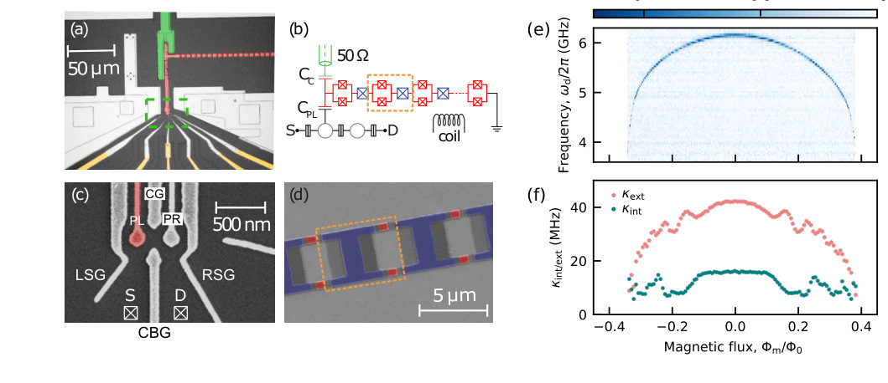
<figcaption class="paper-figure-caption"><b>Fig 1.</b> FIG. 1. (a) False colored optical micrograph of the hybrid device. Al structures (light gray) are deposited on a GaAs/AlGaAs heterostructure (dark gray), to define the superconducting ground plane, and the fine gate structures utilized to form the double quantum dot (DQD). Au leads (yellow) connect the fine gates to the bonding pads (not shown in the figure). The Al/AlOx/Al SQUID array resonator (red) is galvanically connected to one of the fine gates, which is driven with the 50 Ω microwave feedline (green). (b) Schematic circuit diagram displaying the DQD source (S), and drain (D) ohmic contacts, and coupling capacitance to the resonator (CPL). Cc denotes the capacitance between the...</figcaption>
</figure>
<figure class="paper-figure-card">
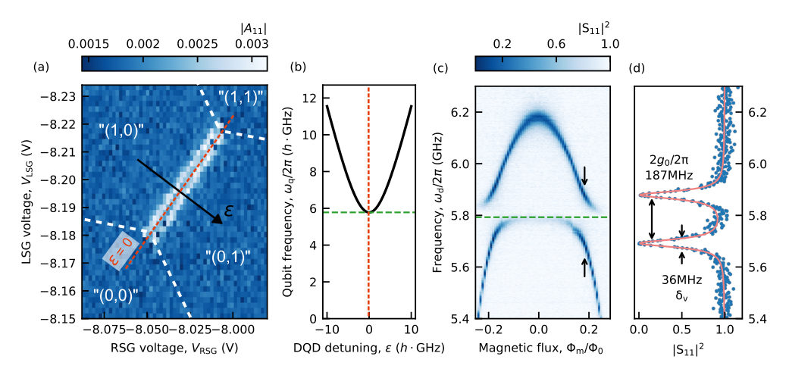
<figcaption class="paper-figure-caption"><b>Fig 2.</b> FIG. 2. (a) Charge stability diagram measurement. The resonator reflection magnitude |A11| is measured near an inter-dot transition, as a function of the voltages applied to the side barrier gates LSG (VLSG) and RSG (VRSG) (see Fig. 1(c)). Black arrow represents the gate voltage direction in which the DQD detuning ε is varied. (b) DQD charge qubit frequency as a function of ε, calculated from ωq/2π = √</figcaption>
</figure>
<figure class="paper-figure-card">
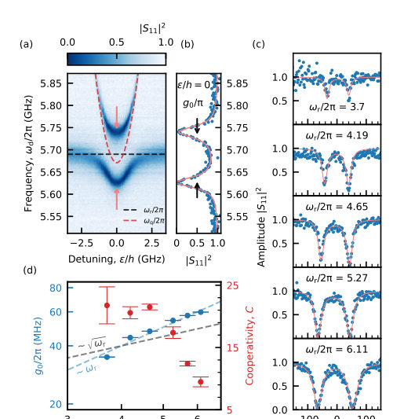
<figcaption class="paper-figure-caption"><b>Fig 3.</b> FIG. 3. (a) |S11|2 measured as a function of ωd and ε with ωr/2π ∼2t/h ∼5.69 GHz. Dashed black line corresponds to the calculated ωq/2π, and the dashed red line denotes ωr/2π, using the parameters extracted from the 2D fit of the spec- trum to a master equation model (see Appendix A5). (b) Linecut of the measured |S11|2 in (a) at ε = 0 (red arrows) revealing the vacuum-Rabi mode splitting. The red solid line is the numerical fit to a master equation model (see text) (c) |S11|2 measured as a function of ωd at ε = 0 with different val- ues of t/h, achieved by gate voltage tuning while maintaining the constant number of charges. ωr is accordingly tuned with Φm (see Fig. 1(e)), to be resonant...</figcaption>
</figure>
<figure class="paper-figure-card">
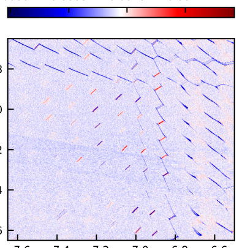
<figcaption class="paper-figure-caption"><b>Fig 4.</b> FIG. 5. Resonator reflection |A11| measured as a function of the VLSG and VRSG (see Fig. 1(c)). The resonator frequency was tuned to ωr/2π ∼5.9 GHz by applying a finite magnetic flux Φm.</figcaption>
</figure>
<figure class="paper-figure-card">
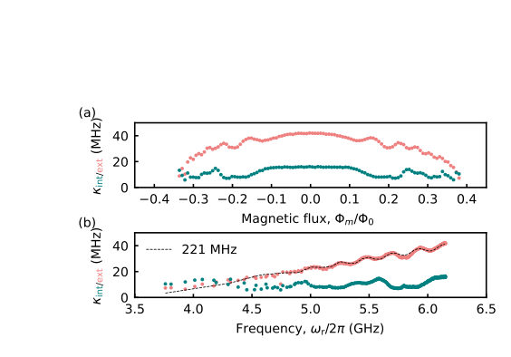
<figcaption class="paper-figure-caption"><b>Fig 5.</b> FIG. 6. External and internal loss rates, κext (red) and κint (green) as a function of (a) applied magnetic flux Φm/Φ0 and (b) resonator frequency ωr/2π, extracted from the circle fit of measured resonator spectrum (see Fig. 1(e)). The oscillations in κext reveal a periodic modulation with a characteristic fre- quency of approximately 221 MHz. The black dashed line in (b) represents a sinusoidal fit with a linear background.</figcaption>
</figure>
</div>

<p><strong>Summary.</strong> The authors used a semiconductor charge qubit coupled to a tunable superconducting resonator to perform frequency-resolved decoherence spectroscopy. They successfully distinguished between pure dephasing and energy relaxation mechanisms across different operating frequencies. The key finding is the observation of a cubic scaling in the relaxation rate, providing direct spectroscopic evidence for coupling to the piezoelectric phonon bath in GaAs.</p>
<p><strong>Why it may be interesting.</strong> This work provides an excellent experimental realization of open quantum system dynamics, allowing for the direct measurement and theoretical confirmation of dissipation channels (like phonon coupling) that limit coherence in solid-state qubits, which is central to modern AMO research.</p>
<details>
<summary>Detailed structure</summary>
<p><strong>Main problem.</strong> The study investigates light-matter interaction and decoherence mechanisms within a solid-state quantum system to probe fundamental limits of coherence.</p>
<p><strong>Main result.</strong> The research successfully characterized the frequency dependence of qubit decay, finding that dephasing dominates at low frequencies while energy relaxation dominates at high frequencies. Furthermore, they established a cubic scaling for the relaxation rate consistent with coupling to a piezoelectric phonon bath.</p>
<p><strong>Method.</strong> Frequency-resolved decoherence spectroscopy was performed by measuring the resonator's reflection magnitude ($|S_{11}|^2$) as the qubit frequency was tuned across a broad range using time-domain measurements (e.g., Ramsey, Hahn-echo).</p>
<p><strong>Model / system.</strong> The platform is a hybrid circuit quantum electrodynamics architecture: a GaAs double-quantum-dot charge qubit capacitively coupled to a high-impedance, frequency-tunable SQUID-array resonator.</p>
<p><strong>Key observables.</strong> Decoherence rates ($\Gamma_1$, $\Gamma_2$), coupling strength ($g_0$), and the measured resonator reflection $|S_{11}|^2$ as a function of qubit detuning and drive frequency.</p>
<p><strong>Important parameters / regimes.</strong> Qubit transition frequency ($\omega_q/2\pi \sim 3-6$ GHz), charge detuning ($\epsilon$), and the ratio of coupling to loss rates (Cooperativity $C$).</p>
<p><strong>Assumptions / limitations.</strong> The analysis relies on fitting measured spectra to master equation models, and certain scaling laws for resonator impedance are assumed when extracting intrinsic couplings.</p>
<p><strong>Figures summary.</strong> Figures illustrate device schematics, charge stability diagrams showing qubit frequency tuning, spectroscopy plots showing avoided crossings (vacuum-Rabi splitting), and decay rate vs. frequency/detuning plots demonstrating the cubic phonon scaling.</p>
<p><strong>Paper structure.</strong> The paper progresses from describing the physical setup and Hamiltonian to performing time-domain measurements to separate relaxation and dephasing. It then analyzes the frequency dependence of these rates, culminating in a quantitative determination of the coupling mechanism via phonon spectral density analysis.</p>
</details>
<details>
<summary>Abstract</summary>
<p>Superconducting resonators coupled to semiconductor quantum dots provide a powerful platform to investigate light-matter interaction and decoherence mechanisms in solid-state quantum systems. Here we study a hybrid circuit quantum electrodynamics architecture consisting of a GaAs double-quantum-dot charge qubit capacitively coupled to a high-impedance, frequency-tunable SQUID-array resonator. By tuning the qubit transition frequency over the range $ω_\mathrm{q}/2π\sim 3$-$6$ GHz, we perform frequency-resolved decoherence spectroscopy of the charge qubit across a broad energy window. Time-resolved measurements enable us to disentangle relaxation and pure dephasing processes and to identify distinct decoherence regimes as a function of qubit frequency. We find that at lower frequencies ($\leq 4.5$ GHz) dephasing dominates the qubit linewidth, whereas at higher frequencies energy relaxation becomes the leading contribution. The measured frequency dependence of the relaxation rate exhibits a cubic scaling, consistent with charge-qubit decay dominated by coupling to a piezoelectric phonon bath and providing frequency-resolved access to the corresponding phonon-induced spectral density. Our results show that hybrid semiconductor--superconducting circuits can serve as sensitive spectroscopic tools to probe microscopic decoherence mechanisms relevant for a wide range of hybrid quantum devices.</p>
</details>
<p><sub><a href="#top">↑ back to top</a></sub></p>

<p><a id="paper-2606.08695"></a></p>
<h3 id="chiral-quantum-entanglement-transfer-with-giant-atoms"><a href="http://arxiv.org/abs/2606.08695v1">Chiral Quantum Entanglement Transfer with Giant Atoms</a></h3>
<p><strong>Authors:</strong> Peng-Fei Wang, Lei Huang, Yi-Long-Yue Guo, Jing Wang, Han-Xiao Zhang, Hong Yang, Dong Yan<br>
<strong>Type:</strong> theory · <strong>Category:</strong> quantum information and computing · <strong>PDF:</strong> <a href="https://arxiv.org/pdf/2606.08695v1">https://arxiv.org/pdf/2606.08695v1</a><br>
<strong>Analysis basis:</strong> full PDF text, analyzed in chunks
<strong>Topic relevance:</strong> 🔥 <code>entanglement &amp; information structure</code> <strong>4/5</strong> · <code>analog quantum simulation</code> <strong>3/5</strong> · <code>correlated / nonlocal dissipation</code> <strong>3/5</strong> · <code>methods for driven-dissipative</code> <strong>3/5</strong> · <code>non-equilibrium dynamics</code> <strong>3/5</strong> · <code>Tavis-Cummings &amp; cavity-many-emitter</code> <strong>2/5</strong> · <code>driven-dissipative phase transition</code> <strong>2/5</strong> · <code>Dicke superradiance</code> <strong>1/5</strong> · <code>Keldysh / 2PI / non-Gaussian methods</code> <strong>1/5</strong> · <code>Rydberg arrays</code> <strong>1/5</strong> · <code>correlated cavity matter</code> <strong>1/5</strong> · <code>exotic spin models in light-matter</code> <strong>1/5</strong> · <code>non-equilibrium universality</code> <strong>1/5</strong></p>
<div class="figure-strip-hint">↔ Scroll figures horizontally</div>
<div class="paper-figures-scroll">
<figure class="paper-figure-card">
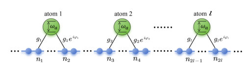
<figcaption class="paper-figure-caption"><b>Fig 1.</b> FIG. 1. Schematic of a discrete multi-giant-atom structure coupled to an infinite one-dimensional lattice. Each two-level giant atom labeled l has transition frequency ωa. The l-th atom couples to the lattice sites n2l−1 and n2l with time- dependent coefficient gl(t). The atom size ds = n2l −n2l−1 and the interatomic distance dw = n2l+1 −n2l are uniform across the array. An additional phase difference φl between the two coupling points of each atom enables control of in- terference effects such as chiral emission and dark-state engi- neering.</figcaption>
</figure>
<figure class="paper-figure-card">

<figcaption class="paper-figure-caption"><b>Fig 2.</b> Figure 1 shows the system: an array of N identical two- level giant atoms with transition frequency ωa coupled to an infinite one-dimensional lattice. Each lattice site has resonance frequency ω0, and η denotes the nearest- neighbor hopping rate. The l-th atom couples to the lattice sites n2l−1 and n2l with the time-dependent cou- pling coefficient gl(t). A phase difference φl between the two coupling points breaks the time-reversal symmetry. The total Hamiltonian is H = Ha + Hw + Haw (ℏ= 1),</figcaption>
</figure>
<figure class="paper-figure-card">
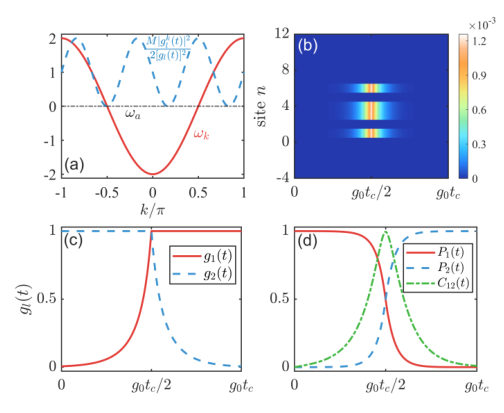
<figcaption class="paper-figure-caption"><b>Fig 3.</b> FIG. 2. (a) The relationship among the lattice band frequency</figcaption>
</figure>
<figure class="paper-figure-card">
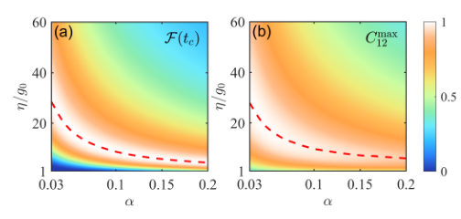
<figcaption class="paper-figure-caption"><b>Fig 4.</b> FIG. 3. (a) Fidelity F(tc) and maximum concurrence Cmax 12 (b) as functions of the coupling coefficient η and the param- eter α. Dashed lines indicates F(tc) = 1 and Cmax 12 = 1, respectively. Other parameters are as in Fig. 2.</figcaption>
</figure>
<figure class="paper-figure-card">
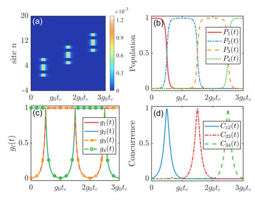
<figcaption class="paper-figure-caption"><b>Fig 5.</b> FIG. 4. (a) Time evolution of the field intensity distribution |cj(t)|2. (b) Time evolution of the population Pl(t) associated with state |ψl⟩. (c) Time evolution of the coupling coefficients gl(t), with g1,3(t) = ga(t) and g2,4(t) = gb(t). (d) Time evolu- tion of the concurrence between neighboring atoms. Other pa- rameters are N = 4, |Ψ(0)⟩= |ψ1⟩, g0t0 = 200, g0τsw = 0.1, g0tc = 200.1, η/g0 = 20, n2l−1 = 4l −4, n2l = 4l −1, ds = 3, dl = 1, and φl = −π/2.</figcaption>
</figure>
</div>

<p><strong>Summary.</strong> The paper proposes using an array of giant atoms coupled to a waveguide to realize perfect and unidirectional transfer of quantum states and entanglement. By controlling chiral spontaneous emission and dark-state dynamics through phase modulation, the system achieves robust state exchange even under non-Markovian conditions. This offers a scalable platform for long-distance quantum networking.</p>
<p><strong>Why it may be interesting.</strong> This work directly addresses quantum network protocols by proposing a physical mechanism (chiral coupling) to achieve high-fidelity, controllable entanglement transport over long distances, which is central to quantum information theory.</p>
<details>
<summary>Detailed structure</summary>
<p><strong>Main problem.</strong> The research aims to achieve perfect, unidirectional transfer of quantum states and associated entanglement across a multi-giant-atom waveguide system.</p>
<p><strong>Main result.</strong> By engineering chiral spontaneous emission and exploiting dark-state dynamics, the setup enables robust, lossless state exchange capable of mimicking braided architectures without structural limitations.</p>
<p><strong>Method.</strong> The analysis involves deriving equations of motion for the single-excitation subspace using a total Hamiltonian ($H = H_a + H_w + H_{aw}$) and applying phase-matching conditions to control directional coupling.</p>
<p><strong>Model / system.</strong> The system consists of an array of N identical two-level giant atoms coupled to an infinite one-dimensional waveguide lattice. The dynamics are governed by time-dependent coupling coefficients $g_l(t)$ and engineered phases $\phi_l$.</p>
<p><strong>Key observables.</strong> Fidelity of state transfer ($F(t)$), maximum interatomic concurrence ($C_{\max}$), population probabilities ($P_l(t)$), and entanglement length.</p>
<p><strong>Important parameters / regimes.</strong> The additional phase ($\phi_l$), coupling coefficients ($g_l(t)$), and the ratio of decay rates ($\kappa_a/\kappa_0$).</p>
<p><strong>Assumptions / limitations.</strong> Analysis is performed in the single-excitation subspace, utilizing chiral spontaneous emission and assuming specific boundary conditions for perfect transfer.</p>
<p><strong>Figures summary.</strong> Figures illustrate schematics of the multi-atom structure, time evolution of field intensity and population, and plots showing state/entanglement transfer dynamics under varying dissipation regimes.</p>
<p><strong>Paper structure.</strong> The paper builds from defining the Hamiltonian and system setup to deriving equations of motion. It then details using phase-matching conditions and time-reversed couplings for perfect state transfer, culminating in demonstrating periodic, lossless exchange via piecewise phase modulation.</p>
</details>
<details>
<summary>Abstract</summary>
<p>We investigate entanglement transfer in a multi-giant-atom waveguide system. By tailoring chiral spontaneous emission and exploiting dark-state dynamics, the setup enables perfect, unidirectional sequential or selective transfer of quantum states and their associated entanglement. The distance between two entangled atoms, i.e., the entanglement length, can be dynamically adjusted, allowing robust conversion between long-range and short-range entanglement during propagation. The system inherently converges to a dark state, guaranteeing high-fidelity directional transfer. When the additional phase is modulated as a periodic piecewise function, spatially separated giant atoms exhibit stable, nearly lossless state exchange and maintain steady entanglement even under non-Markovian conditions. This behavior mimics conventional braided architectures without suffering from propagation delays or spatial restrictions. Our proposal offers a scalable pathway for continuous long-distance entanglement transport and resilient state exchange in quantum networks.</p>
</details>
<p><sub><a href="#top">↑ back to top</a></sub></p>

<p><a id="paper-2606.07800"></a></p>
<h3 id="near-deterministic-single-atom-loading-on-a-photonic-integrated-circuit"><a href="http://arxiv.org/abs/2606.07800v1">Near-deterministic single-atom loading on a photonic integrated circuit</a></h3>
<p><strong>Authors:</strong> Xinchao Zhou, Ahreum Lee, Dipanjan Das, Saivirinchi Prabandhakavi, Chen-Lung Hung<br>
<strong>Type:</strong> experiment · <strong>Category:</strong> other · <strong>PDF:</strong> <a href="https://arxiv.org/pdf/2606.07800v1">https://arxiv.org/pdf/2606.07800v1</a><br>
<strong>Analysis basis:</strong> full PDF text, analyzed in chunks
<strong>Topic relevance:</strong> 🔥 <code>analog quantum simulation</code> <strong>4/5</strong> · <code>Tavis-Cummings &amp; cavity-many-emitter</code> <strong>3/5</strong> · <code>correlated cavity matter</code> <strong>3/5</strong> · <code>quantum measurements</code> <strong>3/5</strong> · <code>quantum optics experiment</code> <strong>3/5</strong> · <code>QC/QI experiment</code> <strong>2/5</strong> · <code>measurement-induced transitions</code> <strong>2/5</strong> · <code>correlated / nonlocal dissipation</code> <strong>1/5</strong> · <code>driven-dissipative phase transition</code> <strong>1/5</strong> · <code>entanglement &amp; information structure</code> <strong>1/5</strong> · <code>interference shaping light</code> <strong>1/5</strong> · <code>methods for driven-dissipative</code> <strong>1/5</strong> · <code>non-equilibrium dynamics</code> <strong>1/5</strong></p>
<div class="figure-strip-hint">↔ Scroll figures horizontally</div>
<div class="paper-figures-scroll">
<figure class="paper-figure-card">
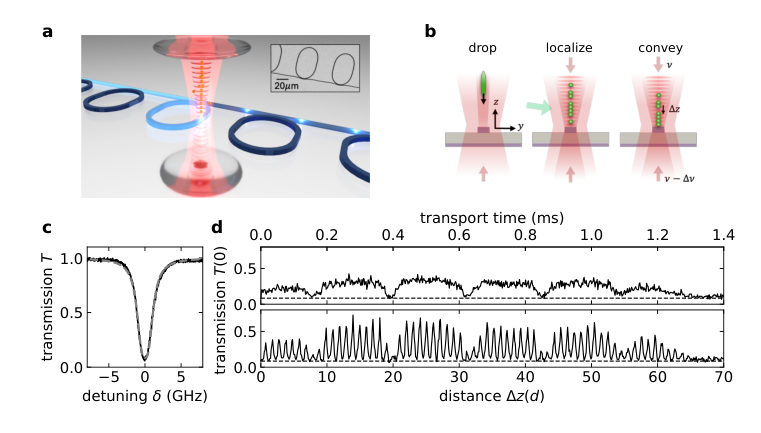
<figcaption class="paper-figure-caption"><b>Fig 1.</b> FIG. 1. Conveyor-belt transport from a cold atom reservoir. a, Schematic of the experimental setup. An optical conveyor belt, formed by a moving optical lattice in an optical tweezer, transports a steady stream of trapped atoms onto a microring resonator. The microring draws in resonant photons from a bus waveguide. Atom-induced transparency in cavity QED generates light pulses synchronized with the conveyor-belt movement. Inset shows a scanning electron micrograph of the microring array. b, Experimental procedure depicting the initial atom guiding (drop), loading into an optical lattice (localize) with additional cooling (green arrow), and the subsequent conveyor-belt transport (convey)...</figcaption>
</figure>
<figure class="paper-figure-card">
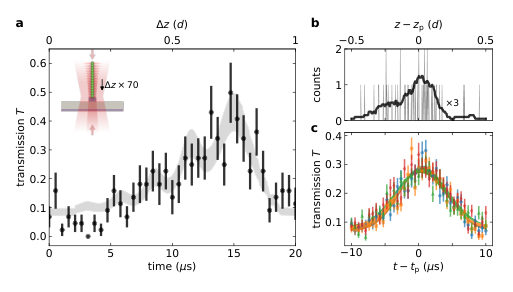
<figcaption class="paper-figure-caption"><b>Fig 2.</b> FIG. 3. Site-resolved measurement. a, Averaged trans- mission T of 70 lattice sites in one transport. Shaded band shows the fitted transmission curve and its uncertainty, based on the model Tn in Fig. 2c and weighted averaged using Pois- son atom-number statistics. The fit yields a mean site occu- pancy ¯n = 1.5(5). b, Time-resolved detector counts (per 10 ns bin) accumulated while transporting the first 10 lattice sites. The transmission peak at t = tp (z = zp) is clearly visible in the average over a 0.6 µs running window (solid line). c, Averaged transmission of four conveyor-belt transports (color symbols), demonstrating excellent alignment using the 10-site average as shown in b to...</figcaption>
</figure>
<figure class="paper-figure-card">
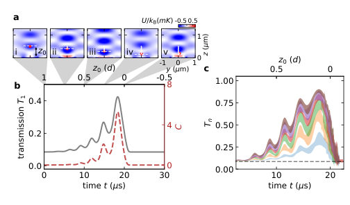
<figcaption class="paper-figure-caption"><b>Fig 3.</b> FIG. 2. Simulated atom-photon coupling during trans- port. a, Potential cross-sections U(y, z) overlaid with a rep- resentative atomic trajectory (white lines, plotted from the initial time to the indicated time), where kB is the Boltz- mann constant. The marked atomic positions (red circles) follow the occupied lattice site (marked by dashed lines), as the distance of the site center to the surface (z0) moves from z0/d =1 (i) to 0.75 (ii), 0.5 (iii), 0.25 (iv), and 0 (v). b, Cal- culated resonant transmission T1 (gray line) and single-atom cooperativity C (red dashed line) during the transport, both averaged over 10 single-atom trajectories. c, Transmission Tn for n = 1, 2, . . . , 6 atoms...</figcaption>
</figure>
<figure class="paper-figure-card">
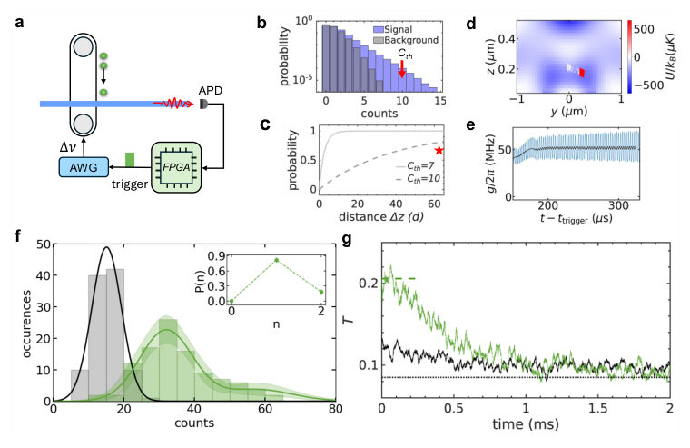
<figcaption class="paper-figure-caption"><b>Fig 4.</b> FIG. 4. Near-deterministic single-atom loading. a, Schematic of feedback-controlled conveyor-belt transport. An FPGA monitors the time-averaged counts from the avalanche photodiode (APD) and triggers the arbitrary waveform generator (AWG) to halt the transport by ramping down ∆ν while ramping up the tweezer power. b, Probability histogram of the APD counts in 10 µs bins. Trigger threshold Cth is set to values with diminishing probability from background counts. c, Calculated (gray lines) and measured (red star) trigger probability versus transport distance ∆z. d, The final stationary potential cross-section and a simulated trajectory plotted following the trigger (white line) and after the...</figcaption>
</figure>
</div>

<p><strong>Summary.</strong> The research presents a novel method using an optical conveyor belt and real-time feedback to load single neutral atoms near a microring resonator on a PIC. This technique successfully achieves the strong coupling regime ($C>1$) and demonstrates deterministic loading, paving the way for scalable quantum information processing architectures.</p>
<p><strong>Why it may be interesting.</strong> This work provides a crucial experimental blueprint for scaling up quantum devices by integrating neutral atoms deterministically onto solid-state photonic platforms, which is vital for realizing large-scale quantum simulators or processors.</p>
<details>
<summary>Detailed structure</summary>
<p><strong>Main problem.</strong> The primary challenge is achieving efficient, scalable integration of identical quantum emitters (neutral atoms) with Photonic Integrated Circuits (PICs) while maintaining strong single atom-photon coupling.</p>
<p><strong>Main result.</strong> The authors demonstrated near-deterministic single-atom loading onto a microring resonator PIC, successfully reaching the strong coupling regime ($C > 1$).</p>
<p><strong>Method.</strong> They employed an optical conveyor belt formed by a moving optical lattice to continuously deliver atoms, followed by real-time feedback control for deterministic trapping into a stationary site.</p>
<p><strong>Model / system.</strong> The system involves Cesium neutral atoms coupled to microring resonators on a silicon-nitride PIC. The coupling is mediated by the atom's interaction with the cavity mode, monitored via atom-induced transparency changes in transmitted probe photons.</p>
<p><strong>Key observables.</strong> Single-atom cooperativity parameter ($C$), single/two-atom transfer probabilities ($P_1 \approx 82\%$, $P_2 \approx 18\%$), and photon antibunching ($g^{(2)}(0) < 0.5$).</p>
<p><strong>Important parameters / regimes.</strong> Strong coupling regime ($C>1$); position resolution down to 4 nm; mean occupancy $ar{n} \approx 1.2$.</p>
<p><strong>Assumptions / limitations.</strong> The reduced two-atom probability is hypothesized to be due to inelastic collision loss during trap transfer and probing.</p>
<p><strong>Figures summary.</strong> Figures illustrate the setup schematic, the conveyor belt transport process, measured transmission spectra showing atom presence, and feedback control loops using APD monitoring.</p>
<p><strong>Paper structure.</strong> The paper details the experimental realization of an optical conveyor belt for controlled atomic delivery, followed by active feedback implementation to achieve deterministic loading into a stationary trap on the PIC. Characterization includes measuring coupling strength and confirming single-atom emission via photon correlation measurements.</p>
</details>
<details>
<summary>Abstract</summary>
<p>Coupling identical quantum emitters to a photonic integrated circuit (PIC) is a key step for scaling up emitter-photon interfaces for quantum science and information processing. Neutral atoms are attractive candidates due to their indistinguishability and controllability. However, experimental realizations of efficient atom trapping on a PIC while achieving strong single atom-photon coupling has so-far remained elusive. Here, we demonstrate near-deterministic single-atom loading on a microring resonator circuit, reaching single-atom cooperativity parameter C &gt; 1 for strong coupling in cavity quantum electrodynamics. We utilize a precision optical conveyor belt, formed by a moving optical lattice in an optical tweezer, to steadily deliver trapped atoms onto a PIC. By continuously monitoring the transmission of probe photons through the circuit, which is sensitive to the proximity of single atoms near a microring resonator, we detect mean occupancy of 1.5 from 70 occupied lattice sites in a conveyor-belt transport of 4 nm position reproducibility. Based upon real-time feedback, we deterministically transfer the delivered atoms into a stationary trap on the microring, achieving 82% (18%) probability of single-(two-)atom transfer. Our technique can be extended to deterministic, highly efficient atom array assembly, providing a scalable route for neutral atom integration with PICs of complex functionalities.</p>
</details>
<p><sub><a href="#top">↑ back to top</a></sub></p>

<p><a id="paper-2606.08756"></a></p>
<h3 id="quantum-resource-localizability-transitions-in-deep-thermalization"><a href="http://arxiv.org/abs/2606.08756v1">Quantum resource localizability transitions in deep thermalization</a></h3>
<p><strong>Authors:</strong> Xiaozhou Feng, Chang Liu, Zihan Cheng, Wen Wei Ho, Matteo Ippoliti<br>
<strong>Type:</strong> theory · <strong>Category:</strong> statistical mechanics · <strong>PDF:</strong> <a href="https://arxiv.org/pdf/2606.08756v1">https://arxiv.org/pdf/2606.08756v1</a><br>
<strong>Analysis basis:</strong> full PDF text, analyzed in chunks
<strong>Topic relevance:</strong> 🔥 <code>entanglement &amp; information structure</code> <strong>4/5</strong> · 🔥 <code>non-equilibrium dynamics</code> <strong>4/5</strong> · <code>measurement-induced transitions</code> <strong>3/5</strong> · <code>non-equilibrium universality</code> <strong>3/5</strong> · <code>quantum measurements</code> <strong>3/5</strong> · <code>scars &amp; prethermalization</code> <strong>2/5</strong> · <code>Keldysh / 2PI / non-Gaussian methods</code> <strong>1/5</strong> · <code>analog quantum simulation</code> <strong>1/5</strong> · <code>correlated / nonlocal dissipation</code> <strong>1/5</strong> · <code>driven-dissipative phase transition</code> <strong>1/5</strong> · <code>methods for driven-dissipative</code> <strong>1/5</strong></p>
<div class="figure-strip-hint">↔ Scroll figures horizontally</div>
<div class="paper-figures-scroll">
<figure class="paper-figure-card">
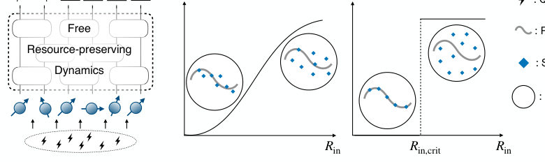
<figcaption class="paper-figure-caption"><b>Fig 1.</b> FIG. 1: (a) Setting of our work. We study deep thermalization through the lens of quantum resource theories (QRTs). We consider systems where a quantum resource (depicted by lightning symbols) is injected through the initial state and the final measurements, and is scrambled by free (i.e., resource-preserving) unitary dynamics. Our work identifies two fundamentally distinct classes of QRTs: (b) “smoothly-localizable” (SL) QRTs, where the resource content RPE of the PE varies smoothly with the globally injected resource Rin, and (c) “threshold-localizable” (TL) QRTs, where the resource content of the PE RPE undergoes a sharp transition from being zero to being near maximal, past a certain...</figcaption>
</figure>
<figure class="paper-figure-card">
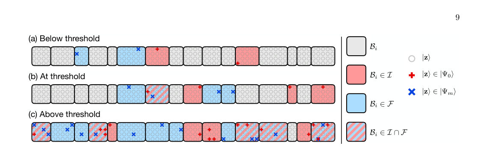
<figcaption class="paper-figure-caption"><b>Fig 2.</b> FIG. 2: Schematic illustration of the block sharpening mechanism. The Hilbert space H is depicted as a collection of bitstrings (circles) arranged into blocks Bi defined by a QRT [Eq. (5)] (black contours). The ket |Ψ0⟩and bra ⟨Ψm| in Eq. (8) contain a set of bitstrings (‘+’ and ‘×’ symbols respectively) that populate two subsets of the blocks, I (shaded red) and F (shaded blue). The free dynamics fully scrambles each bitstring within its block. The overlap [Eq. (8)] receives contributions only from blocks that belong to both I and F (hatched). (a) Resourceless phase. Below the resource threshold, the subsets I and F are so sparse that they typically do not intersect. (b) Critical point. At...</figcaption>
</figure>
<figure class="paper-figure-card">
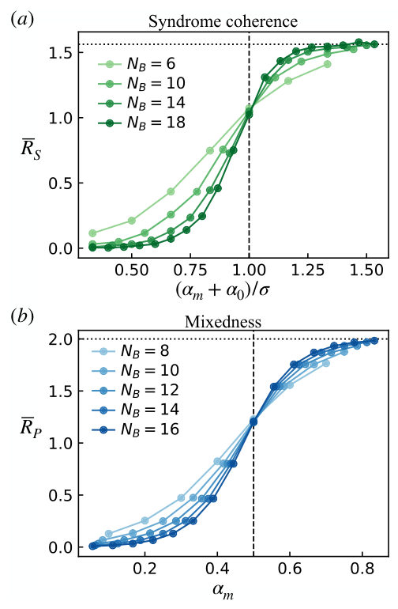
<figcaption class="paper-figure-caption"><b>Fig 3.</b> FIG. 3: Localizability transitions in the QRTs of syn- drome coherence and mixedness / classical randomness. (a) Syndrome coherence. Average resource of PE states Rs as a function of parameters α0,m, within one in- stance of a random parity-check code of rate 1 −σ. We choose NA = 2, α0 = 1/4 and σ = 3/4, while αm is varied; every data point is averaged over 1000 real- izations; each realization uses a random independently sampled parity check code. The vertical dashed line is the predicted critical point αm + α0 = σ, the horizon- tal dotted line is the value for the Haar ensemble. (b) Mixedness/classical randomness. Average PE resource RP = −EEPE log2 P</figcaption>
</figure>
<figure class="paper-figure-card">
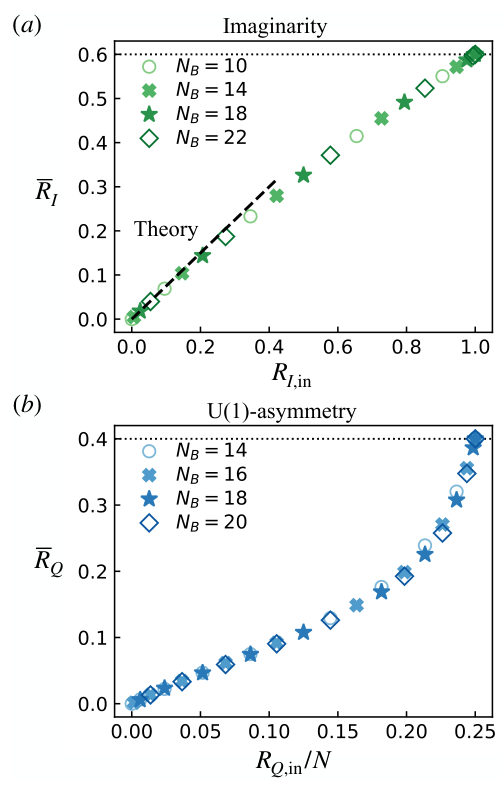
<figcaption class="paper-figure-caption"><b>Fig 4.</b> FIG. 4: Smooth localizability of imaginarity and U(1)- asymmetry. All results are for NA = 2. (a) Average imaginarity of the PE, RI, as a function of the imagi- narity RI,in of the initial state under Haar-random real orthogonal dynamics (see Sec. V A). The theoretical pre- diction Eq. (46) at small α is depicted by the dashed line (here the slope is 3/4), showing good agreement. The average imaginarity of a Haar random ensemble is indi- cated by the horizontal dashed line. (b) Averaged charge variance RQ of the PE versus charge-variance density RQ,in/N of the input state under random asymmetry- free dynamics (see Sec. V B). The horizontal dotted line is the corresponding Haar-random value.</figcaption>
</figure>
<figure class="paper-figure-card">
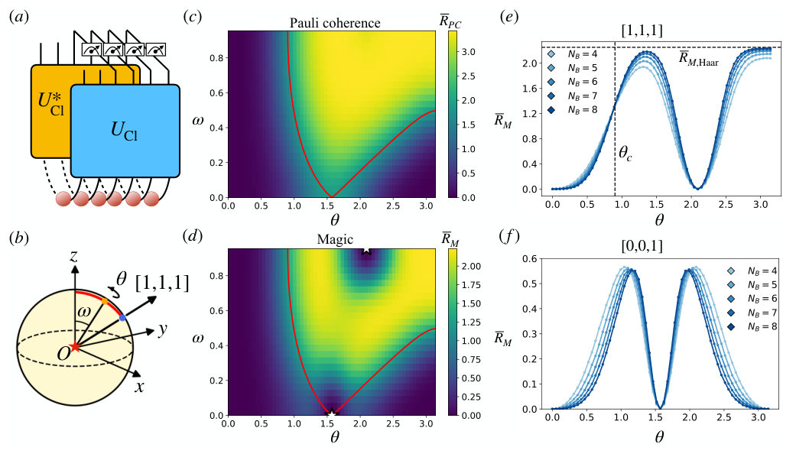
<figcaption class="paper-figure-caption"><b>Fig 5.</b> FIG. 5: (a) Physical realization of our operator evolution setup in 1D as qubits arranged in a ladder geometry, depicted for the case of magic. An initial operator |u(θ, n)⟩⟩⊗N (each u(θ, n) corresponds to a red circle) is evolved under a random Clifford unitary channel UCl ⊗U ∗ Cl, then the bath B is measured in the “phase basis”, Eq. (54). (b) Illustration of the angles θ and ω used to parametrize u(θ, n) = e−i θ</figcaption>
</figure>
</div>

<p><strong>Summary.</strong> The paper develops a unified theory classifying how global constraints on quantum resources affect deep thermalization. It shows that these constraints force the system into one of two regimes: smooth resource changes (SL) or sharp phase transitions (TL). This framework predicts novel critical points, including magic transitions in error-correcting codes.</p>
<p><strong>Why it may be interesting.</strong> This work provides a powerful theoretical tool—the resource localizability criterion—to distinguish between different types of quantum dynamics in highly interacting, non-equilibrium many-body systems, linking fundamental information theory concepts directly to thermalization physics.</p>
<details>
<summary>Detailed structure</summary>
<p><strong>Main problem.</strong> The paper investigates how constraints imposed by various quantum resources affect deep thermalization, which is the emergence of universal local wavefunction distributions from partial measurements.</p>
<p><strong>Main result.</strong> Quantum Resource Theories (QRTs) governing this process fall into two classes: 'smoothly localizable' (SL) leading to continuous resource changes, and 'threshold localizable' (TL) exhibiting sharp phase transitions at critical global resource thresholds.</p>
<p><strong>Method.</strong> The authors develop a unified framework using an information-theoretic mechanism called 'block sharpening' to analyze the dependence of local post-measurement state resources on global initial resources.</p>
<p><strong>Model / system.</strong> The study analyzes general quantum many-body systems undergoing dynamics constrained by specific quantum resources like non-stabilizerness, coherence, and asymmetry. The analysis is performed in the thermodynamic limit using projected ensembles (PE) from partial measurements.</p>
<p><strong>Key observables.</strong> Resource content of the PE ($R_{PE}$), average post-measurement purity ($    ext{Tr}(
ho_{m,A})$), and resource measures like magic or charge variance ($R_Q$).</p>
<p><strong>Important parameters / regimes.</strong> Global resource density ($R_{in}$), critical global resource threshold ($R_{in,crit}$), and system size ratios ($N_A/N$).</p>
<p><strong>Assumptions / limitations.</strong> The analysis relies on mapping QRTs to subspace coherence and utilizes approximations like the random unitary assumption (Haar measure) and concentration inequalities.</p>
<p><strong>Figures summary.</strong> Figures illustrate the SL vs. TL dichotomy in resource content variation, show block sharpening mechanisms via set intersections ($I \cap F$), and map out phase boundaries for various resources.</p>
<p><strong>Paper structure.</strong> The paper establishes the problem of resource localizability in deep thermalization, develops the unified QRT framework based on block sharpening, classifies QRTs into SL/TL types, derives quantitative predictions for phase boundaries using entropy methods (mixed/tilted basis), and concludes by applying these findings to specific physical examples like QEC codes.</p>
</details>
<details>
<summary>Abstract</summary>
<p>We investigate how quantum resource constraints affect deep thermalization, the emergence of universal local wavefunction distributions from partial measurements of a quantum many-body state. Quantum resources, such as non-stabilizerness (magic), coherence, asymmetry, imaginarity, and non-Gaussianity, are essential for quantum information processing, and constraints on their global abundance can reshape these emergent distributions. To address this question, we develop a unified framework for deep thermalization within general quantum resource theories (QRTs). Our central result is that QRTs fall into two classes: <code>smoothly localizable'' (SL) QRTs, where the resource content of local post-measurement states changes continuously with the global resource density, set by the initial state and measurement basis, yielding continuously tunable wavefunction distributions; and</code>threshold localizable'' (TL) QRTs, where the local resource content jumps discontinuously from minimal to near-maximal past a critical global resource threshold, producing a sharp transition between a resourceless, ``deep-ergodicity breaking'' distribution and a resourceful, maximally random one. We trace this SL-TL dichotomy to an information-theoretic mechanism, block sharpening: by viewing each QRT as coherence between blocks in Hilbert space, we show that the local resource content depends on the measurement's ability to collapse an initial superposition into a single resourceless block. Our theory is analytically tractable and quantitatively predicts the phase boundaries across all studied QRTs, which we validate with extensive numerical simulations. Finally, we highlight two consequences: a novel magic transition in zero-rate quantum error-correcting codes--previously believed to occur only at finite rates--and new implications for quantum resource certification protocols based on post-measurement state ensembles.</p>
</details>
<p><sub><a href="#top">↑ back to top</a></sub></p>

<p><a id="paper-2606.08079"></a></p>
<h3 id="exact-spectrum-and-anomalous-relaxation-in-the-open-disorder-free-sachdev-ye-kitaev-system"><a href="http://arxiv.org/abs/2606.08079v1">Exact spectrum and anomalous relaxation in the open disorder-free Sachdev-Ye-Kitaev system</a></h3>
<p><strong>Authors:</strong> Soshun Ozaki, Hironobu Yoshida, Hosho Katsura<br>
<strong>Type:</strong> theory · <strong>Category:</strong> statistical mechanics · <strong>PDF:</strong> <a href="https://arxiv.org/pdf/2606.08079v1">https://arxiv.org/pdf/2606.08079v1</a><br>
<strong>Analysis basis:</strong> full PDF text, analyzed in chunks
<strong>Topic relevance:</strong> 🔥 <code>methods for driven-dissipative</code> <strong>4/5</strong> · 🔥 <code>non-equilibrium dynamics</code> <strong>4/5</strong> · <code>Keldysh / 2PI / non-Gaussian methods</code> <strong>3/5</strong> · <code>correlated / nonlocal dissipation</code> <strong>3/5</strong> · <code>driven-dissipative phase transition</code> <strong>3/5</strong> · <code>entanglement &amp; information structure</code> <strong>2/5</strong> · <code>non-equilibrium universality</code> <strong>2/5</strong> · <code>Kondo &amp; dissipative impurity</code> <strong>1/5</strong> · <code>scars &amp; prethermalization</code> <strong>1/5</strong></p>
<div class="figure-strip-hint">↔ Scroll figures horizontally</div>
<div class="paper-figures-scroll">
<figure class="paper-figure-card">
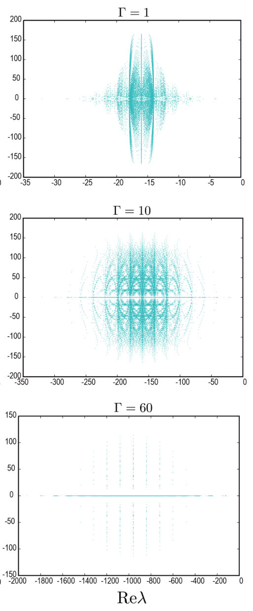
<figcaption class="paper-figure-caption"><b>Fig 1.</b> FIG. 1. Eigenvalues of the Liouvillian L for N = 16 at Γ = 0.2, 1, 4, 10, 20, and 60.</figcaption>
</figure>
<figure class="paper-figure-card">
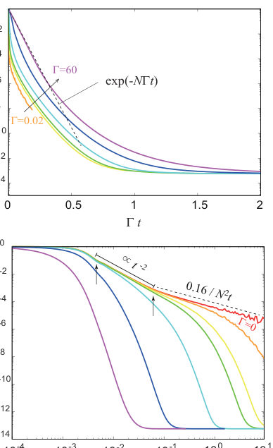
<figcaption class="paper-figure-caption"><b>Fig 2.</b> FIG. 2. Dissipative form factor at N = 44 for Γ = 0.02, 0.1, 0.2, 1.0, 10.0, 60.0 as functions of (a) Γt and (b) t. In (a), the black dashed line represents an exponential de- cay exp(−NΓt). In (b), the Γ = 0 case is also shown in red for comparison, which corresponds to the spectral form factor (SFF) of H4 at T = 0. The black solid line indicates the t−2</figcaption>
</figure>
<figure class="paper-figure-card">
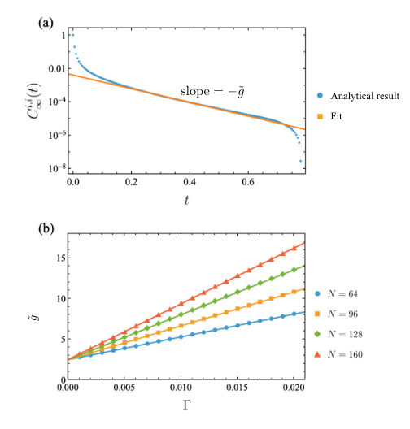
<figcaption class="paper-figure-caption"><b>Fig 3.</b> FIG. 3. (a) Steady-state autocorrelation function for N = 160 and Γ = 0.01. Blue points are computed using Eq. (67), and orange lines represent fits using data points from t = 0.25 to t = 0.75. (b) Values of ˜g obtained by fitting the autocorrelation function to e−˜gt for different Γ. Data for N = 64, 96, 128, and 160 are shown. The fitting interval was set to t = 0.25 to 0.75, regardless of N or Γ.</figcaption>
</figure>
<figure class="paper-figure-card">
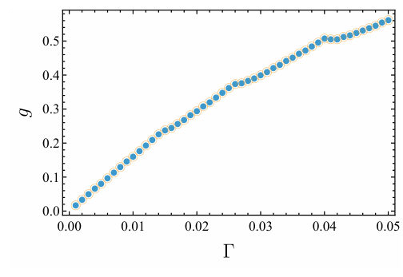
<figcaption class="paper-figure-caption"><b>Fig 4.</b> FIG. 4. The asymptotic decay rate g as a function of Γ (N = 16). Blue points are calculated with Eq. (68) and Orange circles are calculated with Eq. (D1).</figcaption>
</figure>
<figure class="paper-figure-card">
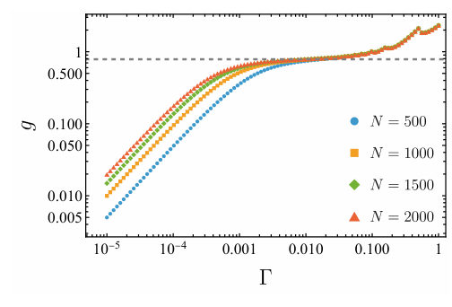
<figcaption class="paper-figure-caption"><b>Fig 5.</b> FIG. 5. The asymptotic decay rate g as a function of Γ (N = 500, 1000, 1500, 2000) calculated with Eq. (D1). The gray dashed line indicates the line g = π</figcaption>
</figure>
</div>

<p><strong>Summary.</strong> This paper analyzes the open Sachdev-Ye-Kitaev (SYK) model by solving its master equation exactly using techniques derived from its integrable clean limit. The key finding is 'anomalous relaxation,' where a non-zero gap persists in the thermodynamic limit even when dissipation vanishes. This suggests deep connections between quantum chaos and steady-state dynamics in many-body systems.</p>
<p><strong>Why it may be interesting.</strong> This work provides an exact theoretical framework for studying non-equilibrium dynamics in strongly interacting quantum systems, particularly highlighting how dissipation interacts with underlying integrability structures.</p>
<details>
<summary>Detailed structure</summary>
<p><strong>Main problem.</strong> The study investigates quantum chaos and anomalous relaxation phenomena in open, interacting many-body systems.</p>
<p><strong>Main result.</strong> The system exhibits anomalous relaxation because the gap governing long-time decay does not vanish in the dissipationless limit when the thermodynamic limit is taken first. This suggests a connection to chaotic dynamics.</p>
<p><strong>Method.</strong> The authors derive exact solutions for the Liouvillian spectrum and time evolution by utilizing the integrability of the clean SYK model within the GKSL formalism.</p>
<p><strong>Model / system.</strong> The system is a disorder-free variant of the Sachdev-Ye-Kitaev (SYK) model subjected to dissipation, governed by a Lindblad master equation. The Hamiltonian involves four-body couplings, and dissipation is introduced via jump operators.</p>
<p><strong>Key observables.</strong> Liouvillian spectrum ($\lambda_m$), projection superoperators ($\Pi_m$), the Dissipative Form Factor (DFF), and the steady-state two-point correlation function $    ext{C}_{i,j}^\infty(t)$.</p>
<p><strong>Important parameters / regimes.</strong> Dissipation strength ($\Gamma$), system size ($N$), and the limit taken ($\lim_{N	o\infty}\lim_{\Gamma	o 0}$ vs. $\lim_{\Gamma	o 0}\lim_{N	o\infty}$).</p>
<p><strong>Assumptions / limitations.</strong> The analysis relies heavily on the integrability of the clean SYK model to derive exact spectral solutions.</p>
<p><strong>Figures summary.</strong> Figures illustrate the transition of Liouvillian eigenvalues from complex to real as dissipation increases, and compare the DFF across various $\Gamma$ values against theoretical scaling forms (SFF).</p>
<p><strong>Paper structure.</strong> The paper proceeds by establishing the formal solution for the density matrix using a CONS basis, deriving explicit expressions for the Liouvillian eigenvalues, calculating the time evolution of correlation functions via the adjoint superoperator, and finally analyzing the limits to pinpoint anomalous relaxation.</p>
</details>
<details>
<summary>Abstract</summary>
<p>We study a disorder-free variant of the Sachdev-Ye-Kitaev (SYK) model with dissipation within the Gorini-Kossakowski-Sudarshan-Lindblad formalism. By utilizing the integrability of the clean SYK model, we derive an exact solution in a spectrum-resolved form, i.e., the eigenvalues and corresponding projection superoperators of the Liouvillian for arbitrary system size $N$. We determine the scaling of the gap that governs the long-time decay of the two-point correlation functions. Importantly, the gap does not vanish in the dissipationless limit when the thermodynamic limit is taken first, despite the integrability of the model. This phenomenon, known as anomalous relaxation, suggests a possible connection with chaotic dynamics and quantum Ruelle-Pollicott resonances. We also find several spectral features, such as transitions in the Liouvillian spectrum from complex to real eigenvalues with increasing dissipation strength, as well as the convergence of the dissipative form factor to the spectral form factor in the dissipationless limit. These findings indicate that the present model offers a useful platform for exploring nontrivial open dynamics of many-body quantum systems.</p>
</details>
<p><sub><a href="#top">↑ back to top</a></sub></p>

<p><a id="paper-2606.09523"></a></p>
<h3 id="single-plasmon-transport-in-one-dimensional-nanowire"><a href="http://arxiv.org/abs/2606.09523v1">Single plasmon transport in one dimensional nanowire</a></h3>
<p><strong>Authors:</strong> A. A. Dıaz-Valles, B. Rousseaux, S. Guérin, H. Jauslin, A. Leray, G. Colas des Francs<br>
<strong>Type:</strong> theory · <strong>Category:</strong> other · <strong>PDF:</strong> <a href="https://arxiv.org/pdf/2606.09523v1">https://arxiv.org/pdf/2606.09523v1</a><br>
<strong>Analysis basis:</strong> full PDF text, analyzed in chunks
<strong>Topic relevance:</strong> 🔥 <code>analog quantum simulation</code> <strong>4/5</strong> · <code>Tavis-Cummings &amp; cavity-many-emitter</code> <strong>3/5</strong> · <code>correlated cavity matter</code> <strong>3/5</strong> · <code>Keldysh / 2PI / non-Gaussian methods</code> <strong>2/5</strong> · <code>driven-dissipative phase transition</code> <strong>2/5</strong> · <code>methods for driven-dissipative</code> <strong>2/5</strong> · <code>non-equilibrium dynamics</code> <strong>2/5</strong> · <code>Kondo &amp; dissipative impurity</code> <strong>1/5</strong> · <code>correlated / nonlocal dissipation</code> <strong>1/5</strong> · <code>entanglement &amp; information structure</code> <strong>1/5</strong> · <code>interference shaping light</code> <strong>1/5</strong> · <code>non-equilibrium universality</code> <strong>1/5</strong></p>
<div class="figure-strip-hint">↔ Scroll figures horizontally</div>
<div class="paper-figures-scroll">
<figure class="paper-figure-card">
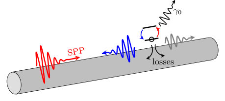
<figcaption class="paper-figure-caption"><b>Fig 1.</b> FIG. 1. Scheme of a two level states emitter coupled to a metallic nanowire and excited by a SPP pulse.</figcaption>
</figure>
<figure class="paper-figure-card">
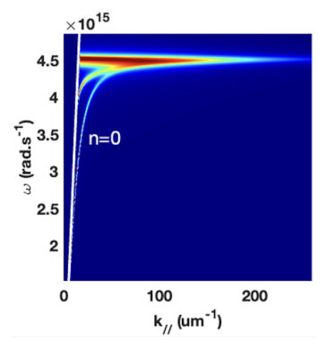
<figcaption class="paper-figure-caption"><b>Fig 2.</b> FIG. 2. Coupling constants (Eq. 3) as a function of the parallel wavevector and angular frequency.</figcaption>
</figure>
<figure class="paper-figure-card">
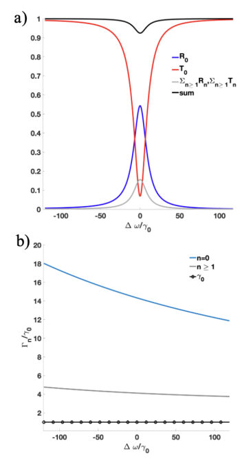
<figcaption class="paper-figure-caption"><b>Fig 3.</b> FIG. 3. a) Modal reflectivity R0(ω) = |c(0−) ω (∞)|2/|c0+ ω (0)|2</figcaption>
</figure>
<figure class="paper-figure-card">
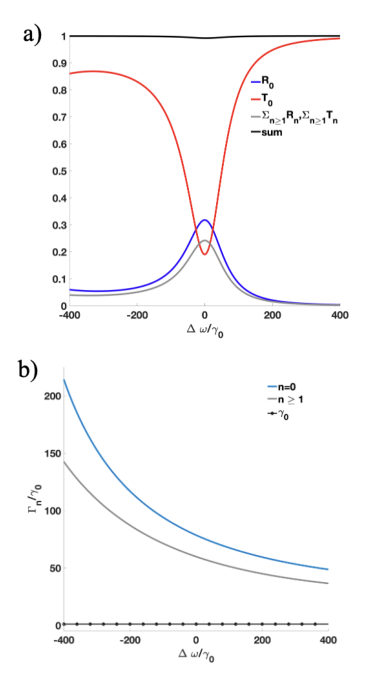
<figcaption class="paper-figure-caption"><b>Fig 4.</b> FIG. 4. Same as Fig. 3 but for a nanowire radius 25 nm and an emitter 5 nm away its surface.</figcaption>
</figure>
<figure class="paper-figure-card">

<figcaption class="paper-figure-caption"><b>Fig 5.</b> FIG. 5. a) Time dependance of the atomic |ce(t)|2 and SPP0 (at ω = ω0) excitations. The gray area refers to the incident pulse enveloppe at the emitter position.b) Spectra of the in- cident, reflected and transmitted SPP0 at the position of the emitter. The parameters are the same as for Fig. 3. The incoming SPP0 pulse width is fixed to ∆= 0.1ω0. γ0 refers to the emitter decay rate in free space and Γ0 is the coupling strength to the guided mode SPP0.</figcaption>
</figure>
</div>

<p><strong>Summary.</strong> This paper establishes a comprehensive theoretical framework to analyze how single plasmons transport through nanowires coupled to multiple quantum emitters. By unifying Green's tensor methods with non-Hermitian Hamiltonians, the authors predict that optimizing emitter placement enhances plasmon control and reduces energy losses significantly. The results provide a robust foundation for designing next-generation plasmonic quantum devices.</p>
<p><strong>Why it may be interesting.</strong> This work is highly relevant as it bridges cavity QED concepts (Hamiltonian modeling, coupling strengths) with solid-state photonics (plasmonic waveguides), providing quantitative predictions for controlling quantum light-matter interactions in nanoscale devices.</p>
<details>
<summary>Detailed structure</summary>
<p><strong>Main problem.</strong> The research develops a unified theoretical framework to model single-plasmon transport through one-dimensional nanowires coupled to quantum emitters.</p>
<p><strong>Main result.</strong> Optimized multi-emitter systems significantly enhance plasmon modulation, achieving high transmittivities while substantially reducing coupling losses compared to single-emitter setups.</p>
<p><strong>Method.</strong> The authors use a combination of quantized electromagnetic Green's tensor formalism and effective non-Hermitian Hamiltonian models to solve coupled differential equations in both time and frequency domains.</p>
<p><strong>Model / system.</strong> The system involves quantum emitters (like atomic qubits) coupled to a dispersive metallic nanowire, such as silver, operating at telecom wavelengths. The model incorporates the emitter energy ($\hat{H}_{QE}$), field energy ($\hat{H}_F$), and interaction ($\hat{H}_{int}$).</p>
<p><strong>Key observables.</strong> Single-plasmon transmittivity ($T_0$), reflectivity ($R_0$), atomic qubit population, and high-order mode losses ($Q_{abs}$).</p>
<p><strong>Important parameters / regimes.</strong> Telecom wavelengths, single/multi-emitter count (e.g., 5 emitters), coupling rates ($\Gamma_n$), and frequency shifts ($\Omega_n$).</p>
<p><strong>Assumptions / limitations.</strong> Approximations include the rotating-wave approximation and assuming slow variation of coupling strength over the pulse bandwidth.</p>
<p><strong>Figures summary.</strong> Figures illustrate schemes for emitter coupling, modal reflectivity/transmittivity spectra ($R_0$ vs $T_0$), time evolution of excitation pulses showing interference dips, and dynamics of excited state populations for multiple emitters.</p>
<p><strong>Paper structure.</strong> The paper progresses from establishing the unified theoretical framework (Green's tensor to non-Hermitian Hamiltonian) to deriving scattering amplitudes, analyzing single-emitter performance, extending the model using Löwdin orthonormalization for multi-emitters, and finally solving the long-time limit of the transport coefficients.</p>
</details>
<details>
<summary>Abstract</summary>
<p>We introduce a unified theoretical framework for single-plasmon transport in one-dimensional nanowires, bridging the quantized electromagnetic Green's tensor formalism with effective non-Hermitian Hamiltonian models. This approach naturally incorporates propagating surface plasmon polaritons, high-order modes dissipative channels, and intrinsic losses. We investigate both the stationary regime and the spatio-temporal dynamics of a single-plasmon pulse travelling through an atomic chain coupled to a dispersive nanowire. We analyze modal contributions to reflection and transmission spectra for quantum emitter coupled to a silver nanowire, a configuration proposed as a single-plasmon transistor, and we demonstrate that optimized multi-emitter systems offer significant advantages. In case of one quantum emitter coupled to a silver nanowire at telecom wavelengths, we predict a single-plasmon transmittivity down to 7\% under realistic conditions, and an atomic qubit population of 12\%. Extension to multi-emitter systems using a Löwdin orthogonalization procedure enables a consistent treatment of collective interactions. We show that optimized positioning with just five emitters enhances plasmon modulation, achieving a transmittivity of 2\% but also reduces coupling losses to one-third compared to the single-emitter case. Our results establish a robust foundation for analyzing and designing plasmonic waveguide quantum electrodynamics systems.</p>
</details>
<p><sub><a href="#top">↑ back to top</a></sub></p>

<p><a id="paper-2606.08482"></a></p>
<h3 id="modified-one-axis-twist-squeezing-for-deterministic-orientation-control-of-schrodinger-cat-states-with-unknown-atom-number-parity"><a href="http://arxiv.org/abs/2606.08482v1">Modified One-Axis-Twist Squeezing for Deterministic Orientation Control of Schrödinger Cat States with Unknown Atom-Number Parity</a></h3>
<p><strong>Authors:</strong> Jinyang Li, Selim M. Shahriar<br>
<strong>Type:</strong> theory · <strong>Category:</strong> other · <strong>PDF:</strong> <a href="https://arxiv.org/pdf/2606.08482v1">https://arxiv.org/pdf/2606.08482v1</a><br>
<strong>Analysis basis:</strong> full PDF text, analyzed in chunks
<strong>Topic relevance:</strong> 🔥 <code>analog quantum simulation</code> <strong>4/5</strong> · <code>Rydberg arrays</code> <strong>3/5</strong> · <code>Tavis-Cummings &amp; cavity-many-emitter</code> <strong>3/5</strong> · <code>correlated cavity matter</code> <strong>3/5</strong> · <code>quantum optics experiment</code> <strong>2/5</strong> · <code>Keldysh / 2PI / non-Gaussian methods</code> <strong>1/5</strong> · <code>correlated / nonlocal dissipation</code> <strong>1/5</strong> · <code>driven-dissipative phase transition</code> <strong>1/5</strong> · <code>entanglement &amp; information structure</code> <strong>1/5</strong> · <code>methods for driven-dissipative</code> <strong>1/5</strong> · <code>non-equilibrium dynamics</code> <strong>1/5</strong></p>
<div class="figure-strip-hint">↔ Scroll figures horizontally</div>
<div class="paper-figures-scroll">
<figure class="paper-figure-card">

<figcaption class="paper-figure-caption"><b>Fig 1.</b> Figure 1. (a) Scheme for realizing the version of the MOATS described by the Hamiltonian ℏ𝜒𝜒𝑁𝑁↑ 2 with Rydberg- mediated nonlinear interaction. The optical field coupling the |↑⟩ and the |𝑟𝑟⟩ state is far detuned. The detuning is denoted by Δ and the Rabi frequency by Ω. (b) Scheme for realizing the version of the MOATS described by the Hamiltonian ℏ𝜒𝜒(2𝑁𝑁↑+ 𝑁𝑁↓)2 with cavity-mediated nonlinear interaction.</figcaption>
</figure>
</div>

<p><strong>Summary.</strong> This paper introduces the Modified One-Axis-Twist Squeezing (MOATS) protocol to overcome a major limitation in quantum sensing using Schrödinger Cat States. Conventional methods fail because they require knowing the parity of the atomic ensemble size ($N$). MOATS generates states whose orientation is robust against this unknown parity, enabling high-precision measurements toward the Heisenberg limit regardless of whether $N$ is even or odd.</p>
<p><strong>Why it may be interesting.</strong> This work directly addresses a critical practical hurdle in quantum metrology using atomic ensembles by providing a robust mechanism (MOATS) to generate high-squeezing states independent of system size parity. This is highly relevant for experimental implementation in cold atom or cavity QED platforms.</p>
<details>
<summary>Detailed structure</summary>
<p><strong>Main problem.</strong> The conventional Schrödinger Cat State Protocol (SCSP) fails to reach the Heisenberg limit because its required One-Axis-Twist Squeezing (OATS) depends on knowing the parity of the number of atoms ($N$), which is generally unknown.</p>
<p><strong>Main result.</strong> The authors propose a Modified OATS (MOATS) operation that generates a Schrödinger Cat state whose orientation is independent of $N$'s parity, thus enabling robust quantum sensing.</p>
<p><strong>Method.</strong> The MOATS Hamiltonian is derived using perturbation theory for Rydberg-mediated interactions and by analyzing effective Hamiltonians in cavity-mediated systems.</p>
<p><strong>Model / system.</strong> The study focuses on atomic ensembles used as sensors, employing spin squeezing generated via nonlinear interactions. Two primary physical realizations are analyzed: Rydberg blockade interactions and cavity QED coupling.</p>
<p><strong>Key observables.</strong> The final state's orientation (remaining x-directed) and the achievable sensor sensitivity relative to the Heisenberg limit ($\propto N$).</p>
<p><strong>Important parameters / regimes.</strong> The number of atoms ($N$), interaction strengths ($\chi, \Omega/\Delta$), and detunings ($\Delta$).</p>
<p><strong>Assumptions / limitations.</strong> The analysis assumes that MOATS successfully decouples the state orientation from $N$'s parity, allowing for simultaneous optimization for even and odd $N$.</p>
<p><strong>Figures summary.</strong> Figure 1 illustrates two distinct physical schemes for realizing MOATS: (a) using Rydberg-mediated interactions and (b) using cavity-mediated nonlinear interactions.</p>
<p><strong>Paper structure.</strong> The paper first identifies the parity limitation of conventional OATS. It then introduces and derives the Hamiltonian for MOATS through both Rydberg and cavity coupling mechanisms, demonstrating its parity independence and analyzing its effect on the final state diagnostics.</p>
</details>
<details>
<summary>Abstract</summary>
<p>The Schrödinger cat state protocol (SCSP) makes use of a Schrödinger cat (SC) state generated with one-axis-twist squeezing (OATS) to enhance the sensitivity. In principle, the SCSP can magnify the phase shift by a factor N, the number of atoms under interrogation, accompanied by a quantum noise amplification by a factor of root-N, enabling an atomic sensor to reach the Heisenberg limit. However, the current SCSP can reach this benchmark only if the parity of N is known, which is almost impossible for a large ensemble. The reason is the orientation of the SC state generated with the conventional OATS depends on the parity of N. In this paper, we propose a modified OATS (MOATS) operation that generates the SC state aligned in a certain direction regardless of the parity of N.</p>
</details>
<p><sub><a href="#top">↑ back to top</a></sub></p>

<p><a id="paper-2606.08557"></a></p>
<h3 id="dissipative-channels-determine-open-electromagnetic-quantization"><a href="http://arxiv.org/abs/2606.08557v1">Dissipative Channels Determine Open Electromagnetic Quantization</a></h3>
<p><strong>Authors:</strong> Hyunwoo Choi, Junwoo Gim, Thomas E. Roth, Weng Cho Chew, Dong-Yeop Na<br>
<strong>Type:</strong> theory · <strong>Category:</strong> other · <strong>PDF:</strong> <a href="https://arxiv.org/pdf/2606.08557v1">https://arxiv.org/pdf/2606.08557v1</a><br>
<strong>Analysis basis:</strong> full PDF text, analyzed in chunks
<strong>Topic relevance:</strong> 🔥 <code>methods for driven-dissipative</code> <strong>4/5</strong> · <code>correlated / nonlocal dissipation</code> <strong>3/5</strong> · <code>driven-dissipative phase transition</code> <strong>3/5</strong> · <code>interference shaping light</code> <strong>3/5</strong> · <code>non-equilibrium dynamics</code> <strong>2/5</strong> · <code>non-equilibrium universality</code> <strong>2/5</strong> · <code>Keldysh / 2PI / non-Gaussian methods</code> <strong>1/5</strong> · <code>analog quantum simulation</code> <strong>1/5</strong> · <code>correlated cavity matter</code> <strong>1/5</strong></p>
<div class="figure-strip-hint">↔ Scroll figures horizontally</div>
<div class="paper-figures-scroll">
<figure class="paper-figure-card">

<figcaption class="paper-figure-caption"><b>Fig 1.</b> FIG. 1: One-dimensional waveguide with an impedance and outgoing BA channel, with a lossy slab providing MA channels. (a) Structure schematic. (b) Purcell factor for an emitter inside the slab (x0 = 5.5 µm). (c) Purcell factor for an emitter outside the slab (x0 = 8.5 µm).</figcaption>
</figure>
<figure class="paper-figure-card">

<figcaption class="paper-figure-caption"><b>Fig 2.</b> FIG. 3: HOM interference for non-Markovian splitter responses. (a) HOM interference kernel K(ω) for the broadband and ring-loaded splitters, with the photon spectrum shown in orange. (b) HOM correlation for the full S(ω) response and the Markovian flat-S(ωc) reference.</figcaption>
</figure>
<figure class="paper-figure-card">

<figcaption class="paper-figure-caption"><b>Fig 3.</b> FIG. 2: Designed photonic integrated circuit configurations and port-channel modes. (a) Broadband 50/50 splitter. (b) Ring-loaded interferometric splitter. (c) Dispersion of the local slab-port cross section, showing the two guided modes retained in the calculation. (d) Transverse profiles of the two guided port modes at λ = 1550 nm. The shaded region denotes the waveguide core.</figcaption>
</figure>
<figure class="paper-figure-card">

<figcaption class="paper-figure-caption"><b>Fig 4.</b> Figure 3(a,b) shows the resulting finite-bandwidth response. The broadband coupler has an almost flat K(ω) over the photon spectrum, so all spectral com- ponents undergo nearly the same transformation and the full calculation agrees with the flat-S(ωc) refer- ence. In contrast, the ring-loaded splitter is tuned near K(ωc) ≃0, but the ring resonance makes K(ω) vary strongly across the photon bandwidth. This produces two finite-bandwidth non-Markovian sig- natures. The dip is shallower because different spec- tral components no longer satisfy the same can- cellation condition, leading to incomplete destruc- tive interference after integration over the photon spectrum. The dip is also shifted...</figcaption>
</figure>
</div>

<p><strong>Summary.</strong> The paper introduces a novel quantization scheme for open electromagnetic systems by deriving environmental reservoirs from the Maxwell operator's dissipation geometry. It successfully formulates input-output relations that accurately describe scattering and noise kernels in complex structures like PICs, correctly capturing non-Markovian spectral effects.</p>
<p><strong>Why it may be interesting.</strong> This work provides a powerful, first-principles method for quantizing open quantum systems in electromagnetism, directly linking macroscopic material losses and boundary coupling to the fundamental bosonic structure of the field operators.</p>
<details>
<summary>Detailed structure</summary>
<p><strong>Main problem.</strong> To formulate a rigorous quantization scheme for open electromagnetic systems by deriving the necessary environmental reservoirs directly from the dissipation geometry of the Maxwell operator, rather than assuming them phenomenologically.</p>
<p><strong>Main result.</strong> The method successfully derives frequency-dependent scattering and noise kernels ($S(\omega), N(\omega)$) that are consistent with fundamental quantum electrodynamics principles, unifying material absorption and open boundary leakage into a single framework.</p>
<p><strong>Method.</strong> It employs Gram factorization on the imaginary part of the Maxwell operator to decompose dissipation into medium-assisted (material loss) and boundary-assisted (radiation/port coupling) channels, leading to an input-output relation for bosonic field operators.</p>
<p><strong>Model / system.</strong> The system is open electromagnetic fields governed by the frequency-domain Maxwell equation. It models structures like photonic integrated circuits (PICs) or lossy slabs with arbitrary passive boundary conditions (e.g., impedance loads, waveguide ports).</p>
<p><strong>Key observables.</strong> Frequency-dependent scattering kernels $S(\omega)$, noise kernels $N(\omega)$, Purcell factors, and Hong–Ou–Mandel (HOM) interference correlation functions.</p>
<p><strong>Important parameters / regimes.</strong> Material permittivity ($\epsilon''$), boundary conditions (impedance/port), frequency $\omega$, and the structure's geometry (2D PIC layouts).</p>
<p><strong>Assumptions / limitations.</strong> The system is passive, ensuring the dissipation operator $D(\omega)$ is positive semi-definite; it assumes thermal equilibrium for standard fluctuation-dissipation theorem applications.</p>
<p><strong>Figures summary.</strong> Figures illustrate comparisons of Purcell factors and HOM interference kernels between full (non-Markovian) and simplified (Markovian) models in PICs, demonstrating spectral dependence effects.</p>
<p><strong>Paper structure.</strong> The paper develops the theory by defining the dissipation operator $D(\omega)$, factorizing it into boundary/material parts, deriving the input-output relation $\hat{a}_{	ext{out}}(\omega) = S(\omega)\hat{a}_{	ext{in}}(\omega) + N(\omega)\hat{f}_{	ext{int}}(\omega)$, and applying this to calculate measurable quantities like scattering matrices and correlation functions.</p>
</details>
<details>
<summary>Abstract</summary>
<p>We formulate a quantization scheme for open electromagnetic systems with arbitrary passive boundary conditions. Rather than specifying reservoirs phenomenologically, the method identifies them from the dissipation geometry of the Maxwell operator. Factoring the imaginary part of the Maxwell operator gives a bosonic realization of the field operator and separates the fluctuation channels into medium-assisted reservoirs from material absorption and boundary-assisted reservoirs from exchange through the open boundary. Depending on the boundary condition, the latter become free-space radiation modes, impedance-load channels, guided port modes, or more general boundary channels. Green-function input-output relations then follow as an application, yielding frequency-dependent scattering and noise kernels without Markov or single-mode assumptions. To illustrate the practical application, we consider a lossy structure with mixed impedance and outgoing boundaries, and photonic integrated circuit configurations with waveguide port boundaries.</p>
</details>
<p><sub><a href="#top">↑ back to top</a></sub></p>

<p><a id="paper-2606.09308"></a></p>
<h3 id="energy-transport-in-randomly-coupled-quantum-systems-a-perturbative-approach"><a href="http://arxiv.org/abs/2606.09308v1">Energy Transport in Randomly Coupled Quantum Systems: A Perturbative Approach</a></h3>
<p><strong>Authors:</strong> Tingfei Li, Runyu Chen<br>
<strong>Type:</strong> theory · <strong>Category:</strong> statistical mechanics · <strong>PDF:</strong> <a href="https://arxiv.org/pdf/2606.09308v1">https://arxiv.org/pdf/2606.09308v1</a><br>
<strong>Analysis basis:</strong> full PDF text, analyzed in chunks
<strong>Topic relevance:</strong> 🔥 <code>non-equilibrium dynamics</code> <strong>4/5</strong> · <code>methods for driven-dissipative</code> <strong>3/5</strong> · <code>non-equilibrium universality</code> <strong>3/5</strong> · <code>Keldysh / 2PI / non-Gaussian methods</code> <strong>2/5</strong> · <code>correlated / nonlocal dissipation</code> <strong>2/5</strong> · <code>driven-dissipative phase transition</code> <strong>2/5</strong> · <code>Kondo &amp; dissipative impurity</code> <strong>1/5</strong> · <code>analog quantum simulation</code> <strong>1/5</strong> · <code>entanglement &amp; information structure</code> <strong>1/5</strong> · <code>scars &amp; prethermalization</code> <strong>1/5</strong></p>
<div class="figure-strip-hint">↔ Scroll figures horizontally</div>
<div class="paper-figures-scroll">
<figure class="paper-figure-card">

<figcaption class="paper-figure-caption"><b>Fig 1.</b> Figure 1: Schematic of the model. The gray background represents the environment, which exchanges work currents ˙W1 and ˙W2 with the two subsystems. The quantity ˙Q denotes the heat current between the subsystems.</figcaption>
</figure>
<figure class="paper-figure-card">

<figcaption class="paper-figure-caption"><b>Fig 2.</b> Figure 2: Schematic of the three pairing types. We use directed lines to represent matrix indices: an arrow pointing toward an operator corresponds to a row index, while an arrow pointing away from an operator corresponds to a column index. The translation of a diagram into a product of traces is straightforward. Begin at any operator and follow the direction of the arrows. Upon encountering a T, jump to the paired T along the dashed line, and then continue following the arrows until a closed loop is completed. This loop corresponds to a single trace, with the operators appearing in the order encountered along the path. Repeat this procedure until all operators in the diagram have been...</figcaption>
</figure>
<figure class="paper-figure-card">

<figcaption class="paper-figure-caption"><b>Fig 3.</b> Figure 3: Energy current and integrated energy flux for the Gaussian model with J = 1 and E = 1. We set β2 = 1 in the left panel and β1 = 1 in the right panel.</figcaption>
</figure>
<figure class="paper-figure-card">

<figcaption class="paper-figure-caption"><b>Fig 4.</b> Figure 4: Heat conductance for the Gaussian model and the constant distribution, with J = E = 1.</figcaption>
</figure>
<figure class="paper-figure-card">

<figcaption class="paper-figure-caption"><b>Fig 5.</b> Figure 6: Comparison between perturbation theory and numerical simulation for the energy E1 and its time derivative ˙E1 of subsystem 1. Three coupling strengths are shown: J = 0.2, 0.5, and 0.8 (from top to bottom). The perturbation curves include the leading-order result and the result with second-order correction. Numerical data are averaged over 100 realizations of the random coupling. Model parameters: N1 = N2 = 10, β1 = 2, β2 = 1, and both subsystem spectra are drawn from a standard Gaussian distribution (E = 1). As J increases, the leading-order prediction deviates more from the numerics, but the second-order correction clearly reduces the error. At early times the perturbative...</figcaption>
</figure>
</div>

<p><strong>Summary.</strong> This paper develops a perturbative framework to calculate energy transport and heat conductance between two quantum systems coupled by random interactions. By expanding the energy current up to second order, the authors derive quantitative results for various spectral density models. The findings provide deep insights into how disorder affects thermalization rates in many-body quantum physics.</p>
<p><strong>Why it may be interesting.</strong> This work provides rigorous theoretical tools to calculate non-equilibrium transport coefficients like heat conductance in complex quantum systems, which is highly relevant for understanding thermalization dynamics in open quantum systems.</p>
<details>
<summary>Detailed structure</summary>
<p><strong>Main problem.</strong> The study focuses on quantifying energy transport, specifically heat conductance, between two quantum systems coupled by a random interaction.</p>
<p><strong>Main result.</strong> Explicit expressions for the energy transfer rate and heat conductance are derived up to second order in the coupling strength for various spectral density models (Gaussian, constant, semicircular, Gamma).</p>
<p><strong>Method.</strong> The analysis employs perturbative expansions in the coupling strength, utilizing diagrammatic techniques and spectral methods within the large-$N$ limit.</p>
<p><strong>Model / system.</strong> The model consists of two quantum subsystems coupled by a random interaction matrix, analyzed using an initial thermal state assumption. The Hamiltonian structure allows for the decomposition of energy current into work and heat components.</p>
<p><strong>Key observables.</strong> Energy current ($\dot{E}_1(t)$), Heat conductance ($\sigma$), Work current ($\dot{W}$), and Heat current ($\dot{Q}$).</p>
<p><strong>Important parameters / regimes.</strong> Coupling strength ($J$), inverse temperatures ($eta_1, eta_2$), and the spectral density function $
ho(\epsilon)$.</p>
<p><strong>Assumptions / limitations.</strong> The analysis relies on treating the coupling as a Gaussian random matrix ensemble and performing calculations in the thermodynamic limit ($N_1, N_2 	o \infty$).</p>
<p><strong>Figures summary.</strong> Figures compare perturbative predictions (leading order + second-order correction) against numerical simulations for energy change rate ($\dot{E}_1$) and energy ($E_1$), demonstrating convergence behavior.</p>
<p><strong>Paper structure.</strong> The paper systematically develops the calculation of the energy current using time evolution operators, derives general expressions up to second order in perturbation theory, and then applies these methods to calculate $\sigma$ for specific spectral distributions (Gaussian, Constant, Semicircle, Gamma).</p>
</details>
<details>
<summary>Abstract</summary>
<p>We study energy transport between two quantum systems coupled through a random interaction. The central feature of our approach is to model the coupling as a Gaussian random matrix, which enables a simple and systematic perturbative expansion. In the large-$N$ limit, we derive explicit expressions for the energy transfer rate and heat conductance up to second order in the coupling strength. Using spectral methods and diagrammatic expansions, we obtain the leading- and next-to-leading-order contributions to the energy transfer rate. We illustrate our results through explicit calculations for Gaussian, constant, semicircular, and Gamma densities of states.</p>
</details>
<p><sub><a href="#top">↑ back to top</a></sub></p>

<p><a id="paper-2606.09708"></a></p>
<h3 id="analog-quantum-simulation-of-chiral-magnetic-dynamics-using-optical-superlattices"><a href="http://arxiv.org/abs/2606.09708v1">Analog quantum simulation of chiral magnetic dynamics using optical superlattices</a></h3>
<p><strong>Authors:</strong> Sabhyata Gupta, Luis Santos<br>
<strong>Type:</strong> both · <strong>Category:</strong> other · <strong>PDF:</strong> <a href="https://arxiv.org/pdf/2606.09708v1">https://arxiv.org/pdf/2606.09708v1</a><br>
<strong>Analysis basis:</strong> full PDF text, analyzed in chunks
<strong>Topic relevance:</strong> 🔥 <code>analog quantum simulation</code> <strong>4/5</strong> · 🔥 <code>non-equilibrium dynamics</code> <strong>4/5</strong> · <code>exotic spin models in light-matter</code> <strong>3/5</strong> · <code>non-equilibrium universality</code> <strong>3/5</strong> · <code>driven-dissipative phase transition</code> <strong>2/5</strong> · <code>Frenkel-Kontorova</code> <strong>1/5</strong> · <code>Keldysh / 2PI / non-Gaussian methods</code> <strong>1/5</strong> · <code>methods for driven-dissipative</code> <strong>1/5</strong></p>
<div class="figure-strip-hint">↔ Scroll figures horizontally</div>
<div class="paper-figures-scroll">
<figure class="paper-figure-card">

<figcaption class="paper-figure-caption"><b>Fig 1.</b> Figure 1: Realized mass m (a) and topological angle θ (b) as a function of the relative phase φ and depth Vℓ of the secondary lattice, at fixed primary-lattice depth Vs = 8ER, with ER the recoil energy. White curves are contours of constant m/w and θ/π. Dashed lines trace the curves Vℓ(φ) that correspond to a fixed m/w = 0.15 (blue) and m/w = 0.30 (red), while θ is varied. In (a) the colormap saturates for m/w &gt; 1, since that region lies outside the light-mass regime of interest.</figcaption>
</figure>
<figure class="paper-figure-card">

<figcaption class="paper-figure-caption"><b>Fig 2.</b> Figure 2: Vector current ¯J following a θ quench from θ = 0 to θf. The time evolution is computed using the Rice-Mele Hamiltonian on an open chain of N = 30 sites, and ¯J is determined using Eq. (9). Panels show (a) m/w = 0.15 and (b) m/w = 0.30, with θf = 0.2 (blue), 0.4 (red), and 0.6 (green). Solid lines are the central (unperturbed) configuration, whereas shaded regions are bands obtained from systematic perturbations of the superlattice parameters Vs (±2.5%), Vℓ(±2.5%), and φ (±0.02 rad). The dashed region is given by the maximal and minimal value obtained within those error windows.</figcaption>
</figure>
<figure class="paper-figure-card">

<figcaption class="paper-figure-caption"><b>Fig 3.</b> Figure 3: Vector current ¯J following a µ5 quench, θ(t) = −2µ5t. The evolution is computed using the Rice-Mele Hamiltonian on an open chain of N = 30 sites. Panels show (a) m/w = 0.15 and (b) m/w = 0.30, with µ5/w = 0.1 (blue), 0.2 (red), and 0.3 (green). Solid lines and shaded regions are defined as in Fig. 2.</figcaption>
</figure>
<figure class="paper-figure-card">

<figcaption class="paper-figure-caption"><b>Fig 4.</b> Figure 2 shows for m/w = 0.15 and m/w = 0.30, the current ¯J after a sudden change of θ from 0 to θf. We recall that for the θ quench the mapping to the Rice- Mele model is exact, and hence the quantum simulation of model (3) is in principle exact. However, experimen- tally, there may be systematic errors in the superlattice parameters. The shaded bands in Figs. 2 are obtained by considering ±2.5% deviations in the value of Vs and Vℓ, and a deviation of ±0.02 rad in the value of φ. The sys- tematic errors introduce a non-negligible effect at longer times, especially for larger masses and larger θf values, due to the stiff dependence of θ on φ, see Fig. 1 (b). The errors, however, do not...</figcaption>
</figure>
<figure class="paper-figure-card">

<figcaption class="paper-figure-caption"><b>Fig 5.</b> Figure 4: Validity of the superlattice-based quantum sim- ulation for the µ5 quench for (a) m/w = 0.7 and (b) m/w = 0.9. The vector current ¯J/w evaluated using the Rice-Mele model (dashed curves) is compared with the exact dynamics given by model (3) (solid curves), for µ5 = 0.2w (blue) and µ5 = 0.5w (red).</figcaption>
</figure>
</div>

<p><strong>Summary.</strong> The authors propose using ultracold atoms in engineered optical superlattices to analogously simulate chiral magnetic dynamics governed by the massive Schwinger model. By implementing controlled quenches of topological angle or chemical potential, they measure the resulting vector current, confirming that this platform is robust and capable of probing complex non-equilibrium quantum phenomena.</p>
<p><strong>Why it may be interesting.</strong> This work directly bridges advanced condensed matter theory (CME, massive Schwinger model) with cutting-edge experimental quantum simulation techniques using cold atoms in optical lattices, making it highly relevant for AMO physicists studying non-equilibrium many-body physics.</p>
<details>
<summary>Detailed structure</summary>
<p><strong>Main problem.</strong> The paper addresses the analog quantum simulation of chiral magnetic dynamics, which is related to the Chiral Magnetic Effect (CME).</p>
<p><strong>Main result.</strong> They demonstrate that ultracold atoms in optical superlattices provide a viable platform for probing non-equilibrium chiral phenomena, showing clear mass dependence in current dynamics.</p>
<p><strong>Method.</strong> The study uses two quench protocols—a topological angle quench and a chiral chemical potential quench—to drive the system's evolution.</p>
<p><strong>Model / system.</strong> The physical platform is ultracold atoms trapped in an optical superlattice. The underlying model is derived from the massive Schwinger model, which maps onto the Rice-Mele tight-binding model.</p>
<p><strong>Key observables.</strong> The spatially averaged vector current (J), which serves as the analogue for the CME current.</p>
<p><strong>Important parameters / regimes.</strong> Mass ($m$), topological angle ($    heta$), and superlattice parameters like $V_\ell$ and $\varphi$.</p>
<p><strong>Assumptions / limitations.</strong> The mapping to the Rice-Mele model requires approximations, particularly when simulating the continuous chiral chemical potential quench ($\mu_5$).</p>
<p><strong>Figures summary.</strong> Figure 1 shows how mass and topological angle are controlled by superlattice depths/phases. Figure 2 illustrates current dynamics during a $   heta$ quench, while Figure 3 shows evolution during a $\mu_5$ quench.</p>
<p><strong>Paper structure.</strong> The paper first derives the lattice Hamiltonian from the continuum Schwinger model (using staggered fermions). It then maps this to the Rice-Mele model and simulates its real-time dynamics using two distinct quench protocols, analyzing the resulting vector current.</p>
</details>
<details>
<summary>Abstract</summary>
<p>We propose an analog quantum simulation of chiral magnetic dynamics using ultracold atoms in an optical superlattice. The massive Schwinger model in the zero gauge coupling limit maps onto the Rice-Mele model, with the fermion mass and topological angle encoded in the superlattice parameters. We study the real-time dynamics of the vector current following two quench protocols that drive continuous chirality injection and chirality relaxation. Simulations with realistic superlattice parameters and experimental noise demonstrates clear mass dependence of the current dynamics in both protocols, robust against experimental imperfections. The vector current may be directly measurable via single-bond-resolved detection, establishing cold atom superlattices as a viable platform for probing non-equilibrium chiral phenomena.</p>
</details>
<p><sub><a href="#top">↑ back to top</a></sub></p>

<p><a id="paper-2606.09649"></a></p>
<h3 id="parahydrogen-cooling-of-nuclear-spin-chains-at-hypogeomagnetic-fields"><a href="http://arxiv.org/abs/2606.09649v1">Parahydrogen Cooling of Nuclear Spin Chains at Hypogeomagnetic Fields</a></h3>
<p><strong>Authors:</strong> Alexey Kiryutin, Danil Markelov, Ivan Zhukov, Erik Van Dyke, Alexandra Yurkovskaya, Danila Barskiy<br>
<strong>Type:</strong> experiment · <strong>Category:</strong> quantum information and computing · <strong>PDF:</strong> <a href="https://arxiv.org/pdf/2606.09649v1">https://arxiv.org/pdf/2606.09649v1</a><br>
<strong>Analysis basis:</strong> full PDF text, analyzed in chunks
<strong>Topic relevance:</strong> 🔥 <code>analog quantum simulation</code> <strong>4/5</strong> · <code>QC/QI experiment</code> <strong>3/5</strong> · <code>entanglement &amp; information structure</code> <strong>3/5</strong> · <code>non-equilibrium dynamics</code> <strong>3/5</strong> · <code>non-equilibrium universality</code> <strong>2/5</strong> · <code>correlated / nonlocal dissipation</code> <strong>1/5</strong> · <code>driven-dissipative phase transition</code> <strong>1/5</strong> · <code>exotic spin models in light-matter</code> <strong>1/5</strong> · <code>methods for driven-dissipative</code> <strong>1/5</strong></p>
<div class="figure-strip-hint">↔ Scroll figures horizontally</div>
<div class="paper-figures-scroll">
<figure class="paper-figure-card">

<figcaption class="paper-figure-caption"><b>Fig 1.</b> Figure 1: Signal Amplification by Reversible Exchange (SABRE) as a method for pre-initializing nuclear spin chains. (A) Schematic of the reversible exchange of parahydrogen and a [U-13C,15N]- butyronitrile spin chain with an Ir-based polarization transfer complex. L and S denote ancillary ligands of the complex. (B) Polarization transfer from parahydrogen to the spin chain occurs through the network of scalar J-couplings within the complex, resulting in hyperpolarization of the spin chain. (C) 1H, 15N, and 13C NMR signals hyperpolarized by SABRE at 1 µT (top traces) compared with the corresponding thermal spectra, scaled by factors of 100, 1000, and 300, respectively (bottom traces). Note...</figcaption>
</figure>
<figure class="paper-figure-card">

<figcaption class="paper-figure-caption"><b>Fig 2.</b> Figure 2: 15N (left) and 13C (right) NMR spectra (9.4 T) of [U-13C,15N]-butyronitrile obtained after SABRE polarization at ultralow magnetic fields (from −0.5 µT to +0.9 µT). The negative sign of the magnetic field indicates the opposite direction relative to the detection field in the NMR magnet. Note the multiplication factors of ×100 and ×5 for the data columns corresponding to pyridine (Py) and 2@Ir/2, respectively.</figcaption>
</figure>
<figure class="paper-figure-card">

<figcaption class="paper-figure-caption"><b>Fig 3.</b> Figure 3: (A) Experimental (top) and calculated (bottom) dependence of signal intensities of SABRE-polarized signals as a function of ultralow magnetic field during parahydrogen bubbling. The bubbling time was set to 10 s for all experiments, and the temperature was maintained at 25 ◦C; (B) Dynamics of SABRE polarization buildup measured at magnetic fields of 0.4 µT and 2.0 µT for the 15N (top) and 13C (bottom) spins in [U-13C, 15N]-butyronitrile. All signal intensities are given as a percentage of the maximum theoretical polarization. The thin black lines show fits to the data using a mono-exponential function with the effective buildup time constant, τeff.</figcaption>
</figure>
</div>

<p><strong>Summary.</strong> The research demonstrates that molecular nuclear spin chains can be initialized into highly ordered, non-equilibrium states suitable for quantum computation by employing parahydrogen-based Signal Amplification by Reversible Exchange (SABRE). By measuring entropy and achieving measurable polarization enhancements at room temperature, the authors establish a robust experimental method to prepare multi-spin registers for quantum control experiments.</p>
<p><strong>Why it may be interesting.</strong> This work provides a powerful experimental protocol for initializing quantum registers (spin systems) far from thermal equilibrium using chemical hyperpolarization, directly addressing a major bottleneck in liquid-state quantum simulation platforms.</p>
<details>
<summary>Detailed structure</summary>
<p><strong>Main problem.</strong> The primary challenge is overcoming the low initial polarization (high entropy) of molecular nuclear spin networks, which limits their use as quantum simulators for quantum information science.</p>
<p><strong>Main result.</strong> The authors successfully hyperpolarized a 12-spin chain using SABRE at hypogeomagnetic fields, achieving non-equilibrium multi-spin orders indicated by a significant negative entropy deficit.</p>
<p><strong>Method.</strong> They employed Signal Amplification by Reversible Exchange (SABRE) utilizing parahydrogen ($ ext{pH}_2$) hyperpolarization transferred to the spin chain nuclei via reversible exchange at ultralow magnetic fields, followed by high-field NMR readout.</p>
<p><strong>Model / system.</strong> The system is a chemically engineered molecular nuclear spin network, specifically a ${}^{12}	ext{-spin chain}$ $[	ext{U}-{}^{13}	ext{C}, {}^{15}	ext{N}]	ext{-butyronitrile}$. The Hamiltonian dynamics are modeled as an analog quantum simulation of a Heisenberg spin chain.</p>
<p><strong>Key observables.</strong> Von Neumann entropy ($S$), nuclear spin temperatures ($T_E$), and polarization levels for ${}^{13}	ext{C}$ and ${}^{15}	ext{N}$.</p>
<p><strong>Important parameters / regimes.</strong> Optimal transfer field of $0.52\ \mu	ext{T}$; achieved spin temperatures of $52\ 	ext{mK}$ (${}^{15}	ext{N}$) and $257\ 	ext{mK}$ (${}^{13}	ext{C}$).</p>
<p><strong>Assumptions / limitations.</strong> The method does not cool the liquid sample itself but prepares a room-temperature ensemble whose quantum state is highly ordered relative to thermal equilibrium.</p>
<p><strong>Figures summary.</strong> Figures illustrate the SABRE process schematic, comparison of hyperpolarized vs. thermal NMR signals across various nuclei, and field dependence plots showing polarization buildup at ultralow fields.</p>
<p><strong>Paper structure.</strong> The paper details the physical problem (low initial entropy), introduces the SABRE technique using $   ext{pH}_2$ at hypogeomagnetic fields to generate non-equilibrium order, quantifies this order via entropy analysis, and validates the method through site-resolved NMR readout.</p>
</details>
<details>
<summary>Abstract</summary>
<p>Solution-state molecular nuclear spin networks are promising quantum simulators because their scalar-coupling Hamiltonians are chemically programmable, precisely measurable, and coherent at room temperature. Their main limitation for quantum information science is initialization: thermal Boltzmann polarization produces highly mixed, high-entropy states. Here, we use parahydrogen-based Signal Amplification by Reversible Exchange (SABRE) at hypogeomagnetic fields (i.e., magnetic fields below Earth field) to hyperpolarize the chemically engineered 12-spin chain [U-13C,15N]-butyronitrile. SABRE generates percent-level 13C and 15N polarization and prepares non-equilibrium multi-spin orders across the network. A von Neumann entropy analysis of such a hyperpolarized system shows that, at the optimal transfer field of 0.52 uT, the full spin system could reach S/k = 8.274, compared with S/k = 8.318 for the unpolarized reference, giving (S-Sth)/k = -0.043. Experimentally, nuclear spin temperatures of 52 mK and 257 mK are achieved for 15N and 13C subensembles, respectively. The larger entropy deficit of the full network than of individual subsystems indicates correlated multi-spin order beyond single-spin polarizations. Rapid field cycling to 9.4 T enables site-resolved NMR readout, while the precisely determined coupling network provides an experimentally benchmarked Hamiltonian for testing quantum-simulation, quantum-control, and Hamiltonian-learning protocols.</p>
</details>
<p><sub><a href="#top">↑ back to top</a></sub></p>

<p><a id="paper-2606.08004"></a></p>
<h3 id="tracking-metastable-phases-by-complex-lee-yang-zeros"><a href="http://arxiv.org/abs/2606.08004v1">Tracking metastable phases by complex Lee-Yang zeros</a></h3>
<p><strong>Authors:</strong> Yi-Hua Dong, Ling Liu, Fang-Cheng Wang, Qi-Jun Ye, Xin-Zheng Li<br>
<strong>Type:</strong> theory · <strong>Category:</strong> statistical mechanics · <strong>PDF:</strong> <a href="https://arxiv.org/pdf/2606.08004v1">https://arxiv.org/pdf/2606.08004v1</a><br>
<strong>Analysis basis:</strong> full PDF text, analyzed in chunks
<strong>Topic relevance:</strong> 🔥 <code>methods for driven-dissipative</code> <strong>4/5</strong> · <code>Keldysh / 2PI / non-Gaussian methods</code> <strong>3/5</strong> · <code>driven-dissipative phase transition</code> <strong>3/5</strong> · <code>non-equilibrium dynamics</code> <strong>3/5</strong> · <code>non-equilibrium universality</code> <strong>2/5</strong> · <code>Kondo &amp; dissipative impurity</code> <strong>1/5</strong> · <code>analog quantum simulation</code> <strong>1/5</strong> · <code>correlated / nonlocal dissipation</code> <strong>1/5</strong> · <code>scars &amp; prethermalization</code> <strong>1/5</strong></p>
<div class="figure-strip-hint">↔ Scroll figures horizontally</div>
<div class="paper-figures-scroll">
<figure class="paper-figure-card">

<figcaption class="paper-figure-caption"><b>Fig 1.</b> FIG. 1: The three-Gaussian-peak model with (a)-(d) the referenced DOS distribution P(E, β = β0) for varying A2 at ln A2 = −∞, −1, 1.38, and 4, respectively. The other parameters are fixed, as A1 = A3 = 1, µk = 300 −75 × k, σ1,3 = 10 and σ2 = 5. The light red, green, and blue peaks represent phase I, II, III, respectively. For each DOS, it can be reweighted to the profile of coexistence of two phases at certain T, such as β = β0 ∓0.0439 in (e) and (f) from (d), where the phase transitions I-II and II-III occur, respectively. (g) the complex phase diagram: the horizontal plane is spanned by real axes of temperature β −β0 and peak parameter ln A2, showing the EPD, and the vertical planes...</figcaption>
</figure>
<figure class="paper-figure-card">

<figcaption class="paper-figure-caption"><b>Fig 2.</b> FIG. 2: The energy probability distribution P(E, β = 4) under varying field intensities: (a) M1 = 0, (b) a weak external field with M1 = 0.045, and (c) a strong external field with M1 = 0.090. (d) The potential-energy profile V (r) along the principal direction x1 at r′ = 0. (e) The M1–˜β phase diagram. In the M1–Re(˜β) plane, solid lines are obtained from MD simulations, while the dashed lines label the trajectories of the two closest LYZs. In the Re(˜β)–Im(˜β) plane, the calculated LYZ points are plotted. Phases I–III and their energetic peaks and domains in the complex plane are labeled with light red, green, and blue shading, respectively. (f) ∆β and the relative peak height during...</figcaption>
</figure>
</div>

<p><strong>Summary.</strong> This paper develops a method using Lee-Yang zeros in the complex thermal field to locate and track metastable phases that are otherwise invisible in standard equilibrium phase diagrams. By applying this to both simple toy models and periodically driven physical systems, the authors demonstrate a quantitative link between LYZ structure and the stabilization of non-equilibrium collective states. This offers a new theoretical tool for engineering matter under external driving fields.</p>
<p><strong>Why it may be interesting.</strong> This work provides a powerful theoretical framework for analyzing non-equilibrium steady states by extending classical statistical mechanics tools (Lee-Yang theory) into the complex plane, which is highly relevant for understanding driven quantum systems.</p>
<details>
<summary>Detailed structure</summary>
<p><strong>Main problem.</strong> The study aims to characterize metastable phases (MPs), which are energetically unfavorable states typically suppressed or invisible in standard equilibrium phase diagrams.</p>
<p><strong>Main result.</strong> Lee-Yang zeros (LYZs) in the complex thermal field plane delineate these MPs, showing that their emergence and stabilization can be tracked by observing LYZ loci approaching the real axis.</p>
<p><strong>Method.</strong> The authors utilize Lee-Yang theory applied to complex thermal fields ($    ilde{eta}$) to map out phase boundaries and locate hidden metastable regions.</p>
<p><strong>Model / system.</strong> The analysis uses two models: a toy system with a tunable three-Gaussian density of states, and a more realistic periodically driven system governed by Langevin dynamics on a multi-well potential.</p>
<p><strong>Key observables.</strong> Lee-Yang Zeros (LYZs), the distance from the real axis to branching points ($d_{BP}$), and the gap between stable phase branches ($\Deltaeta$).</p>
<p><strong>Important parameters / regimes.</strong> Drive amplitudes ($M_1$), drive frequencies ($    au_1,   au_2$), and the complex thermal field parameter $   ilde{eta}$.</p>
<p><strong>Assumptions / limitations.</strong> The analysis assumes that viewing periodic drives as complex thermal fields provides a valid extension of Lee-Yang theory beyond equilibrium conditions.</p>
<p><strong>Figures summary.</strong> Figures illustrate the three-Gaussian DOS, the evolution of LYZ profiles in the complex plane under changing parameters, and how $d_{BP}$ and $\Deltaeta$ track the stabilization of metastable phases.</p>
<p><strong>Paper structure.</strong> The paper establishes the problem by noting MPs are hidden from EPDs. It then introduces LYZ analysis using toy models (Gaussian DOS) and periodically driven systems to demonstrate that complex phase diagrams reveal MP boundaries, linking this theory to terahertz matter manipulation.</p>
</details>
<details>
<summary>Abstract</summary>
<p>Metastable phases (MPs) are energetically unfavorable states typically suppressed in equilibrium phase diagrams. Rather than remaining ''hidden'', we show that they exist in the complex plane of thermal fields, as regions delineated by Lee-Yang zeros (LYZs). We demonstrate this numerically in a toy model with a tunable density of states featuring three Gaussian peaks and in a more realistic periodically driven system. In both cases, as artificial parameters or drive amplitudes increase, the LYZs bounding the MP approach the real axis and split into separated branches, signaling the emergence and stabilization of the MP within the enlarged gap between two adjacent stable phases. In the driven system, the imaginary part of LYZs correlates with drive strength, linking Lee-Yang theory to terahertz matter manipulation. These findings provide a scheme to describe MPs in phase diagram analysis. By viewing periodic drives as complex thermal fields, it also offers a new perspective for understanding and engineering non-equilibrium collective states.</p>
</details>
<p><sub><a href="#top">↑ back to top</a></sub></p>

<p><a id="paper-2606.08873"></a></p>
<h3 id="scope-a-syndrome-driven-control-plane-for-qec-enabled-quantum-networks"><a href="http://arxiv.org/abs/2606.08873v1">SCOPE: A Syndrome-Driven Control Plane for QEC-Enabled Quantum Networks</a></h3>
<p><strong>Authors:</strong> Xiaojie Fan, Zian Wang, Ashutosh Tiwari, Himanshu Gupta<br>
<strong>Type:</strong> both · <strong>Category:</strong> quantum information and computing · <strong>PDF:</strong> <a href="https://arxiv.org/pdf/2606.08873v1">https://arxiv.org/pdf/2606.08873v1</a><br>
<strong>Analysis basis:</strong> full PDF text, analyzed in chunks
<strong>Topic relevance:</strong> 🔥 <code>quantum measurements</code> <strong>4/5</strong> · <code>measurement-induced transitions</code> <strong>3/5</strong> · <code>methods for driven-dissipative</code> <strong>3/5</strong> · <code>QC/QI experiment</code> <strong>2/5</strong> · <code>Keldysh / 2PI / non-Gaussian methods</code> <strong>1/5</strong> · <code>correlated / nonlocal dissipation</code> <strong>1/5</strong> · <code>driven-dissipative phase transition</code> <strong>1/5</strong> · <code>entanglement &amp; information structure</code> <strong>1/5</strong> · <code>non-equilibrium dynamics</code> <strong>1/5</strong></p>
<div class="figure-strip-hint">↔ Scroll figures horizontally</div>
<div class="paper-figures-scroll">
<figure class="paper-figure-card">

<figcaption class="paper-figure-caption"><b>Fig 1.</b> Figure 2: SCOPE System Overview. The architecture follows a closed-loop Software-Defined Networking (SDN) pattern. The Con- trol Plane hosts the intelligence, comprising the Learning Engine (which infers the Error Map ˆΘ from passive syndromes) and the Decision Engine (which computes optimized Route-Code plans). The Data Plane executes these plans, transmitting qubits, generating remote entanglement, and exporting decoding-syndrome outcomes as feedback. (biases) and (2) cheap enough to collect continuously. Standard passive metrics like End-to-End Fidelity or Success Rates are insufficient; knowing a link has 90% fidelity tells us that it is noisy, but not how (e.g., is it dominant X-noise...</figcaption>
</figure>
<figure class="paper-figure-card">

<figcaption class="paper-figure-caption"><b>Fig 2.</b> Figure 1: Motivation for coupled route and code selection, via passive syndrome probes.</figcaption>
</figure>
<figure class="paper-figure-card">

<figcaption class="paper-figure-caption"><b>Fig 3.</b> Figure 3: DST Engine Architecture</figcaption>
</figure>
<figure class="paper-figure-card">

<figcaption class="paper-figure-caption"><b>Fig 4.</b> Figure 4: Correlation-Aware Learning Engine</figcaption>
</figure>
<figure class="paper-figure-card">

<figcaption class="paper-figure-caption"><b>Fig 5.</b> Figure 5: Estimation error (MAPE) and logical error rate (LER) for the dependent-error and direct transmission.</figcaption>
</figure>
</div>

<p><strong>Summary.</strong> This paper introduces SCOPE, a novel control plane for fault-tolerant quantum networks that jointly optimizes network routing and QEC code selection. By passively analyzing error syndromes generated during normal operation, it reconstructs the true, time-varying noise map of the network. This allows it to select optimal paths and codes in real-time, achieving substantial reductions in logical error rates over existing methods.</p>
<p><strong>Why it may be interesting.</strong> While focused on networking protocols, the core technique of using deep learning to invert complex physical measurements (syndromes) into actionable system parameters is highly relevant for modeling open quantum systems where full state tomography is impossible.</p>
<details>
<summary>Detailed structure</summary>
<p><strong>Main problem.</strong> Current quantum network control planes fail because they treat routing decisions and Quantum Error Correction (QEC) code selection as decoupled processes, leading to suboptimal end-to-end logical error rates.</p>
<p><strong>Main result.</strong> The proposed SCOPE architecture significantly reduces estimated error by over 60% and lowers logical error rates by 30-35% in large networks compared to topology-aware baselines.</p>
<p><strong>Method.</strong> SCOPE uses passive syndrome tomography, harvesting parity-check outcomes from live user traffic to build a time-varying network error map, which then drives a joint optimization engine for route and code selection.</p>
<p><strong>Model / system.</strong> The system models quantum networks as graphs where information is protected by QEC. The methodology supports both direct transmission (pathing) and teleportation-based communication (swap trees).</p>
<p><strong>Key observables.</strong> End-to-End Logical Error Rate (LER), syndrome histograms, Pauli error rate vectors ($\vec{p}$), and the inferred network error map $\hat{\Theta}$.</p>
<p><strong>Important parameters / regimes.</strong> The performance is sensitive to noise biases (e.g., $p_X, p_Y, p_Z$) and path history dependence, requiring joint optimization over route and code.</p>
<p><strong>Assumptions / limitations.</strong> It assumes that passive syndrome data can provide sufficient statistical information to reconstruct the complex, time-varying error map without interrupting service or injecting probes.</p>
<p><strong>Figures summary.</strong> Figures illustrate the SCOPE system overview following an SDN pattern, showing how the Tomography Engine infers $\hat{\Theta}$ and the Decision Engine selects optimal $(	ext{Route}, 	ext{Code})$ tuples to minimize LER.</p>
<p><strong>Paper structure.</strong> The paper establishes the need for joint optimization (decoupling flaw), introduces SCOPE's passive syndrome tomography approach, details the DST/GNN inference engine, and concludes with performance validation across various error regimes (direct vs. teleportation).</p>
</details>
<details>
<summary>Abstract</summary>
<p>As quantum networks evolve from experimental testbeds to fault-tolerant systems, the primary performance metric shifts from physical link fidelity to end-to-end logical error rate. However, current control planes remain ill-equipped for this transition: routing decisions are typically decoupled from Quantum Error Correction (QEC) strategies, relying on topology or scalar fidelity metrics that fail to predict how specific physical noise structures interact with logical codes. Optimizing this coupled route-and-code performance requires precise, real-time visibility into network error biases, yet traditional active tomography is operationally prohibitive due to throughput collapse and service interruption.   We present SCOPE (Syndrome-based COntrol PlanE), a network-layer architecture that enables joint routing and coding optimization using purely passive telemetry. Instead of injecting probes, SCOPE harvests error syndromes -- the parity-check outcomes naturally generated by QEC decoders during user service. By aggregating these signals, SCOPE's inference engine reconstructs the network's time-varying error map, capturing complex, context-dependent noise correlations. This visibility drives a decision engine that proactively pushes optimal route-and-code configurations to source nodes. NetSquid and IBM-calibrated simulations show that SCOPE reduces estimation error by more than 60% relative to a standard EM baseline. In large-scale networks, this precision reduces logical error rates by 30-35% (up to 65%) against topology-aware baselines.</p>
</details>
<p><sub><a href="#top">↑ back to top</a></sub></p>

<p><a id="paper-2606.07797"></a></p>
<h3 id="floquet-entanglement-generation-in-parametrically-driven-coupled-superconducting-qubits"><a href="http://arxiv.org/abs/2606.07797v1">Floquet Entanglement Generation in Parametrically Driven Coupled Superconducting Qubits</a></h3>
<p><strong>Authors:</strong> Gustavo M. Meneses A., Daniel Dominguez, María José Sánchez<br>
<strong>Type:</strong> theory · <strong>Category:</strong> quantum information and computing · <strong>PDF:</strong> <a href="https://arxiv.org/pdf/2606.07797v1">https://arxiv.org/pdf/2606.07797v1</a><br>
<strong>Analysis basis:</strong> full PDF text, analyzed in chunks
<strong>Topic relevance:</strong> 🔥 <code>entanglement &amp; information structure</code> <strong>4/5</strong> · <code>methods for driven-dissipative</code> <strong>3/5</strong> · <code>non-equilibrium dynamics</code> <strong>3/5</strong> · <code>driven-dissipative phase transition</code> <strong>2/5</strong> · <code>Keldysh / 2PI / non-Gaussian methods</code> <strong>1/5</strong> · <code>analog quantum simulation</code> <strong>1/5</strong> · <code>correlated / nonlocal dissipation</code> <strong>1/5</strong> · <code>non-equilibrium universality</code> <strong>1/5</strong></p>
<div class="figure-strip-hint">↔ Scroll figures horizontally</div>
<div class="paper-figures-scroll">
<figure class="paper-figure-card">

<figcaption class="paper-figure-caption"><b>Fig 1.</b> Figure 1. (a)Energy spectrum of the static Hamiltonian H0 as function of the normalized static coupling J0/ω for ϵ0/ω = 1. The top-right inset shows a zoom of the quasi-degeneracy of E2 and E3, while the bottom-right inset highlights the avoided crossing at J0/ω = ϵ0/ω. (b) Color map of the ground state concurrence C, as a function of {ϵ0/ω, J0/ω}. Two entangled regions can be identified:(i) a triangular region for |J0/ω| &lt; |ϵ0/ω| in which C0 ≈1 and (ii) a narrow band around ϵ0/ω ≈0. Outside these regions, the ground state is nearly separable.</figcaption>
</figure>
<figure class="paper-figure-card">

<figcaption class="paper-figure-caption"><b>Fig 2.</b> Figure 2. (a) Color map of C (Eq.(7)), in the parameter space {ϵ0/ω, J0/ω} for A/ω = 3.8. Patterns where entanglement is strong emerge within the parameter regime that corresponds to nearly separable region (J0/ω &gt; 0) in the static case (see Fig.1(b)). (b) C for two different resonance conditions. For ϵ0/ω = 1.11 localized entanglement peaks (C &lt; 0.5) appear whenever the system reaches an SER condition. In contrast, for the n = 2 SSR condition (ϵ0/ω = 1) a broad and robust enhancement of entanglement is obtained with C ≈0.75 over a wide range of J0/ω. Time evolution was averaged over t/T = 700 and 64 distinct initial phases φ0.</figcaption>
</figure>
<figure class="paper-figure-card">

<figcaption class="paper-figure-caption"><b>Fig 3.</b> Figure 3. Color map of C as a function of {J0/ω, A/ω}. (a) For ϵ0/ω = 1.11 resonances where C ≈.5 are observed only for values of J0/ω satisfying the SER condition. (b) For the SSR condition ϵ0/ω = 1 (nω = 2) the concurrence predominantly exceeds 0.8, exhibiting moderate modulations as a function of the driving amplitude A/ω. See text for more details.</figcaption>
</figure>
<figure class="paper-figure-card">

<figcaption class="paper-figure-caption"><b>Fig 4.</b> Figure 4. Double-averaged transition probabilities Pij in the parameter space {J0/ω, A/ω} for ϵ0/ω = 1 (nω = 2) SSR con- dition. A clear change in the plots is observed at J0/ω = ϵ0/ω, corresponding to the location of the avoided in the spectrum of H0 (see Sec.II for details). (a) P01 depicts broad SSR reso- nances patterns for the region J0/ω &gt; 1, where |ϕ1⟩is nearly separable. (b) P02 displays narrow, amplitude-modulated, fringes for values of J0/ω satisfying the SER condition. In this case |ϕ2⟩is entangled. (c) P03 displays broad SSR res- onances for J0/ω &lt; 1 (|ϕ3⟩is nearly separable). Conversely for J0/ω &gt; 1 ( |ϕ3⟩is entangled) resonances only appear for values of J0/ω satisfying the...</figcaption>
</figure>
<figure class="paper-figure-card">

<figcaption class="paper-figure-caption"><b>Fig 5.</b> Figure 5. Comparison between numerical simulations (solid black lines) and analytical predictions obtained from the GVV theory (dashed red lines) for a pure SSR condition, ϵ0/ω = 1 and J0/ω = 2.5, in all the cases as a function of the driving amplitude A/ω. (a) Quasienergies ε↑↑and ε↓↓. (b) Effective coupling u and dynamic Stark shift difference δ↑↑−δ↓↓. Note that their respective zeros do not coincide. (c)Double-averaged transition probability P01. CDT (P01 = 0) occurs at the roots of u. The maximum population transfer(P01 = 0.5) is for the condition δ↑↑−δ↓↓= 0.</figcaption>
</figure>
</div>

<p><strong>Summary.</strong> This paper theoretically analyzes how parametric driving generates and controls entanglement in coupled superconducting qubits. It establishes that the generation mechanism relies on Floquet state hybridization under specific resonance conditions (SSR). The work also predicts a controllable suppression of this entanglement, termed Coherent Destruction of Entanglement.</p>
<p><strong>Why it may be interesting.</strong> This work provides a detailed theoretical framework for engineering quantum resources like entanglement in solid-state qubits using time-periodic driving, which is crucial for building scalable quantum processors.</p>
<details>
<summary>Detailed structure</summary>
<p><strong>Main problem.</strong> The study investigates how robust, sustained entanglement can be dynamically generated in a coupled superconducting qubit system using parametric driving fields.</p>
<p><strong>Main result.</strong> A nontrivial mechanism for Floquet entanglement generation (FEG) is shown to occur under specific resonance conditions (SSR), which is distinct from conventional excitation methods. Furthermore, the phenomenon of Coherent Destruction of Entanglement (CDE) allows for controlled suppression of this generated entanglement.</p>
<p><strong>Method.</strong> The analysis employs Floquet theory combined with generalized Van Vleck near-degenerate perturbation theory to derive an effective Hamiltonian governing the system's dynamics.</p>
<p><strong>Model / system.</strong> The model consists of two superconducting qubits coupled via a time-periodic, parametrically driven longitudinal interaction. The system is analyzed using its time-dependent Hamiltonian and subsequent Floquet quasienergy spectrum.</p>
<p><strong>Key observables.</strong> Double-averaged concurrence ($C$), which quantifies entanglement; transition probabilities ($P_{ij}$); dynamic Stark shifts ($\delta_{\uparrow\uparrow}/\delta_{\downarrow\downarrow}$) and effective coupling ($u$).</p>
<p><strong>Important parameters / regimes.</strong> Driving amplitude ($A$) relative to $\omega$, detunings ($\epsilon_0/\omega, J_0/\omega$), and the resonance conditions (SSR vs. SER).</p>
<p><strong>Assumptions / limitations.</strong> The analysis relies heavily on second-order perturbation theory (GVV approximation) because standard approximations like RWA fail under certain resonance conditions.</p>
<p><strong>Figures summary.</strong> Figures map out the time-averaged concurrence ($C$) in parameter space, highlighting strong entanglement patterns near resonances and demonstrating how $C$ is suppressed when the effective coupling vanishes (CDE).</p>
<p><strong>Paper structure.</strong> The paper progresses from establishing the physical model and identifying resonance types (SER vs. SSR), to employing advanced perturbation theory (GVV) to derive an effective Hamiltonian, and finally analyzing the resulting entanglement dynamics, including the mechanism for its suppression (CDE).</p>
</details>
<details>
<summary>Abstract</summary>
<p>We investigate the dynamical generation of entanglement in a system of two superconducting qubits coupled through a parametrically driven longitudinal interaction. Using Floquet theory and exact numerical simulations, we analyze the time evolution of the system initialized in a separable ground state. Our results reveal a nontrivial mechanism for entanglement generation, fundamentally distinct from the conventional resonant excitation to an entangled eigenstate. We show that this mechanism emerges when two initially separable eigenstates are mixed by the periodic driving under multiphoton resonance conditions. Since the effect cannot be captured within a standard rotating-wave approximation, we employ generalized Van Vleck near-degenerate perturbation theory to derive an effective analytical description. Within this framework, we demonstrate that the sustained entanglement originates from the hybridization of the dominant Floquet states, namely those with the largest overlap with the initial ground state. Furthermore, the degree of entanglement can be efficiently controlled through the driving amplitude. In particular, for specific amplitudes, the entanglement is fully suppressed. We term this phenomenon as coherent destruction of entanglement.</p>
</details>
<p><sub><a href="#top">↑ back to top</a></sub></p>

<p><a id="paper-2606.08595"></a></p>
<h3 id="is-exact-markovianity-fundamental-once-time-is-relational"><a href="http://arxiv.org/abs/2606.08595v1">Is Exact Markovianity Fundamental Once Time Is Relational?</a></h3>
<p><strong>Authors:</strong> Partha Nandi, Francesco Petruccione<br>
<strong>Type:</strong> theory · <strong>Category:</strong> other · <strong>PDF:</strong> <a href="https://arxiv.org/pdf/2606.08595v1">https://arxiv.org/pdf/2606.08595v1</a><br>
<strong>Analysis basis:</strong> full PDF text, analyzed in chunks
<strong>Topic relevance:</strong> 🔥 <code>quantum measurements</code> <strong>4/5</strong> · <code>measurement-induced transitions</code> <strong>3/5</strong> · <code>methods for driven-dissipative</code> <strong>3/5</strong> · <code>correlated / nonlocal dissipation</code> <strong>2/5</strong> · <code>non-equilibrium dynamics</code> <strong>2/5</strong> · <code>Keldysh / 2PI / non-Gaussian methods</code> <strong>1/5</strong> · <code>driven-dissipative phase transition</code> <strong>1/5</strong></p>
<div class="figure-strip-hint">↔ Scroll figures horizontally</div>
<div class="paper-figures-scroll">
<figure class="paper-figure-card">

<figcaption class="paper-figure-caption"><b>Fig 1.</b> Figure 1. Covariant relational open-system dynamics. A physical observer defines operational time by reading a finite- resolution quantum clock rather than referring to an external classical time parameter. The standing observer on the left represents an operational agent who extracts relational time τ from the quantum clock, whose finite temporal resolution ∆τ introduces intrinsic temporal uncertainty. The subsystem S interacts locally with its environment B on spacetime hypersurfaces Σ, while the total state evolves covariantly according to the Schwinger–Tomonaga equation. Conditioning the dynamics on the clock reading induces a relational reduced evolution in which memory effects arise...</figcaption>
</figure>
</div>

<p><strong>Summary.</strong> The paper develops a covariant theory for open quantum dynamics in relativistic settings by treating time as relational, derived from physical quantum clocks. It proves that this relational structure generically leads to non-Markovian evolution, showing that the familiar Markovian master equation is merely an effective approximation valid only under specific coarse-graining assumptions.</p>
<p><strong>Why it may be interesting.</strong> This work directly tackles foundational issues at the intersection of quantum gravity and open quantum systems, providing a rigorous framework for how time dependence emerges from physical measurements rather than being imposed externally.</p>
<details>
<summary>Detailed structure</summary>
<p><strong>Main problem.</strong> The paper addresses the fundamental conflict between Markovian open quantum dynamics, which requires an external time parameter, and relativistic physics, where time is fundamentally relational.</p>
<p><strong>Main result.</strong> Exact Markovian evolution is shown to be only an effective limit, emerging only after a process of relational coarse-graining; intrinsically, the reduced dynamics are generically non-Markovian due to clock fluctuations.</p>
<p><strong>Method.</strong> The authors use a covariant formalism based on the Schwinger–Tomonaga equation, developing a time-convolutionless master equation directly on spacetime hypersurfaces by conditioning the evolution on physical quantum clocks.</p>
<p><strong>Model / system.</strong> The model involves a composite relativistic system (System S + Environment B) whose dynamics are governed by local operators on spacelike hypersurfaces $\Sigma$, with time operationalized via a finite-resolution quantum clock C.</p>
<p><strong>Key observables.</strong> Reduced density matrix ($
ho_{S,  au}$), memory kernel ($C(\sigma)$), and the resulting master equation structure (GKLS vs. non-Markovian).</p>
<p><strong>Important parameters / regimes.</strong> Clock resolution scale ($\sigma$), environmental correlation time ($ au_B$), and the separation of scales ($\sigma \gg   au_B$).</p>
<p><strong>Assumptions / limitations.</strong> The formalism assumes an operational decomposition into sectors (S, B, C) and relies on approximations like statistical independence between noise sources and separation of scales to recover known limits.</p>
<p><strong>Figures summary.</strong> Figure 1 illustrates how finite-resolution clock extraction leads to memory effects from both environmental correlations and clock fluctuations, contrasting this with standard external time dynamics.</p>
<p><strong>Paper structure.</strong> The paper builds the covariant formalism using the Schwinger–Tomonaga equation on spacetime hypersurfaces. It derives the reduced relational dynamics, demonstrating non-Markovianity due to the dressed memory kernel $C(\sigma)$. Finally, it shows that the familiar GKLS structure is recovered only in an effective limit via coarse-graining.</p>
</details>
<details>
<summary>Abstract</summary>
<p>Markovian open quantum theory assumes evolution with respect to an external classical time parameter, yet no preferred notion of time exists fundamentally in relativistic physics. We resolve this tension by formulating relativistic open quantum dynamics relationally through finite-resolution quantum clocks. Using the Schwinger-Tomonaga formalism, we derive a covariant master equation directly on spacetime hypersurfaces and show that the resulting reduced dynamics is generically non-Markovian even for local interactions. Environmental correlations and clock fluctuations jointly generate the memory kernel, while the Gorini-Kossakowski-Lindblad-Sudarshan (GKLS) structure emerges only after relational coarse-graining, implying that exact Markovian evolution is effective rather than fundamental. In the sharp-clock limit, the formalism reduces to the Anastopoulos-Hu gravitational decoherence equation.</p>
</details>
<p><sub><a href="#top">↑ back to top</a></sub></p>
<hr>
<p>
<a href="index.html">← Index</a>
 · <a href="papers_02.html">Next →</a>
</p>
<hr>

</body>
</html>
